Activiti工作流实战开发
Activiti工作流实战开发任务目标第一章：概念普及1.1、什么是工作流1.2、哪些行业需要工作流1.3、工作流系统的使用第二章：Activti的历史简介第三章：重要名字解释3.3、BPMN基础第四章：使用IntelliJ IDEA搭建Activti开发环境4.1、创建pom.xml文件配置环境所需要的依赖包4.2、Activiti的核心配置4.2.1、创建ProcessEngine引擎类4.2.2、读取activiti.cfg.xml配置文件4.2.3、关于ProcessEngineConfiguration构建ProcessEngine多种方式4.2.4、关于数据的配置参数说明4.3、Activiti所支持数据库类型4.4、Activiti创建的数据表4.5、创建一个Java类初始化Activiti的数据库第五章：Activiti整体结构图5.1、Service服务说明5.1.1、RepositoryService仓库服务5.1.2、运行时服务5.1.3、任务服务5.1.4、认证服务5.1.5、历史服务5.1.6、历史服务第六章：Process流程的定义和部署维护6.1、采用classpath方式6.2、采用InputStream流的方式6.3、在用zip压缩流的方式6.4、流程定义的删除6.5、查看流程定义6.6、流程定义文件的查询6.7、流程发布信息查询第七章：Activiti用户与用户组的关系7.1、表结构7.2、操作用户组和用户表7.3、用户与用户组关系第八章：Activiti流程实例和个人任务管理8.1、启动流程实例8.2、启动个人任务的三种方式PersonalTask第九章：Activiti集成Spring、Mybatis实现自定义表单9.1、配置pom.xml9.2、配置Activiti工作的引擎和数据库连接9.3、spring集成mybatis环境配置9.4、配置mybatis-config.xml9.5、绘制请假流程单9.6、初始化Activiti数据库操作9.7、具体业务逻辑管理类9.8编写请假单的实体类和service接口实现类9.9、mybatis接口以及mapper文件9.10、主键生成策略和核心测试类第十章：表单的介绍以及FormService使用10.1、获取动态表单的内容10.2、根据节点的信息获取form表单信息10.4、获取外置表单的信息第十一章：ServiceTask自动执行任务11.1、使用监听类实现java的服务任务11.2、使用Delegate expression来实现java的服务任务第十二章：MailTask邮件任务第十三章：ManualTask人工任务第十四章：ReceiveTask接收任务第十五章：指定任务组办理人第十六章：Activiti的网关(GateWay)设置16.1、排他网关16.2、并行网关16.3、包含网关第十七章：Activiti子流程第十八章：Activiti流程驳回、会签、挂起操作第十九章：Activiti 集成SpringBoot18.1、SpringBoot 集成第二十章：Activiti集成MockMVC单元测试第二十一章：Activiti REST API数据风格安装与认证课前默写作业面试题
任务
1. 工作流的基本理论 2. Activiti简介及BPMN 3. 使用IDEA搭建Activiti开发环境 4. Activiti的整体结构 5. Process流程定义和部署维护 6. Activiti用户和用户组 7. Activiti流程实例和个人任务管理 8. Activiti集成Spring、MyBatis实现自定义表单 9. 表单的介绍以及FormService的使用 10.ServiceTask自动执行任务 11.MailTask邮件任务 12.ManualTask人工任务 13.ReceiveTask接收任务 14.指定任务组办理人 15.Activiti网关设置 16.Activiti子流程 17.Activiti流程驳回、会签、挂起操作 18.Activiti集成SpringBoot 19.Activiti继承MockMVC单元测试 20.Activiti REST API数据风格的实现
目标
1. 掌握工作流的基本理论 2. 掌握Activiti简介及BPMN 3. 掌握使用IDEA搭建Activiti开发环境 4. 掌握Activiti的整体结构 5. 掌握Process流程定义和部署维护 6. 掌握Activiti用户和用户组 7. 掌握Activiti流程实例和个人任务管理 8. 掌握Activiti集成Spring、MyBatis实现自定义表单 9. 掌握表单的介绍以及FormService的使用 10.掌握ServiceTask自动执行任务 11.掌握MailTask邮件任务 12.掌握ManualTask人工任务 13.掌握ReceiveTask接收任务 14.掌握指定任务组办理人 15.掌握Activiti网关设置 16.掌握Activiti子流程 17.掌握Activiti流程驳回、会签、挂起操作 18.掌握Activiti集成SpringBoot 19.掌握Activiti继承MockMVC单元测试 20.掌握Activiti REST API数据风格的实现
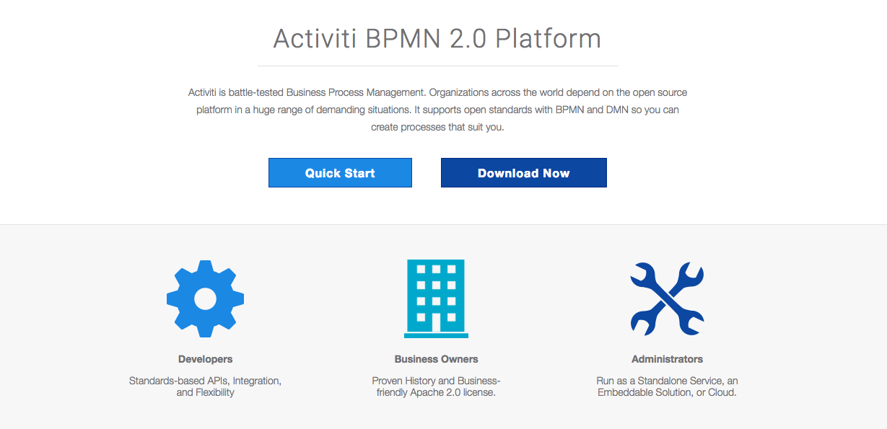
第一章：概念普及
1.1、什么是工作流
工作流(Workflow)，就是通过计算机对业务流程自动化执行管理。它主要解决的是“使在多个参与者之间按照某种预定义的规则自动进行传递文档、信息或任务的过程，从而实现某个预期的业务目标，或者促使此目标的实现”。
工作流就是通过计算机技术对业务流程进行自动化管理。实现多个参与者按照预定的流程去自动执行业务流程。
1.2、哪些行业需要工作流
消费品行业，制造业，电信服务业，银证险等金融服务业，物流服务业，物业服务业，物业管理，大中型进出口贸易公司，政府事业机构，研究院所及教育服务业等，特别是大的跨国企业和集团公司。
总结一句话：凡是有组织机构的公司都有可能用到工作流。
1.3、工作流系统的使用
- 关键业务流程：订单、报价处理、采购处理、合同审核、客户电话处理、供应链管理等
- 行政管理类:出差申请、加班申请、请假申请、用车申请、各种办公用品申请、购买申请、日报周报等凡是原来手工流转处理的行政表单。
- 人事管理类：员工培训安排、绩效考评、职位变动处理、员工档案信息管理等。
- 财务相关类：付款请求、应收款处理、日常报销处理、出差报销、预算和计划申请等。
- 客户服务类：客户信息管理、客户投诉、请求处理、售后服务管理等。
- 特殊服务类：ISO系列对应流程、质量管理对应流程、产品数据信息管理、贸易公司报关处理、物流公司货物跟踪处理等各种通过表单逐步手工流转完成的任务均可应用工作流软件自动规范地实施。
第二章：Activti的历史简介
Activiti项目是一项新的基于Apache许可的开源BPM平台，从基础开始构建，旨在提供支持新的BPMN 2.0标准，包括支持对象管理组（OMG），面对新技术的机遇，诸如互操作性和云架构，提供技术实现。
创始人Tom Baeyens是JBoss jBPM的项目架构师，以及另一位架构师Joram Barrez，一起加入到创建Alfresco这项首次实现Apache开源许可的BPMN 2.0引擎开发中来。
Activiti前身 是jbpm4，Activiti架构和jbpm4基本上是一样的。
架构师Tom Baeyens说：“ Activiti有非常大的影响力来改变目前BPM的生态。Activiti的Apache授权，完整的功能，将使Activiti到达一个新的水平。Activiti将推动业界的创新，因为BPM技术可以广泛而自由地被应用。通过实现这些想法以及开源社区的努力，也让Activiti成为事实上的 BPM和BPMN标准执行“。
第三章：重要名字解释
3.1、BPM
BPM，即业务流程管理，是一种以规范化的构造端到端的卓越业务流程为中心，以持续的提高组织业务绩效为目的的系统化方法，常见商业管理教育如EMBA、MBA等均将BPM包含在内。
3.2、BPMN
BPMN：业务流程建模与标注，包括这些图元如何组合成一个业务流程图（Business Process Diagram）；讨论BPMN的各种的用途，包括以何种精度来影响一个流程图中的模型；BPMN作为一个标准的价值，以及BPMN未来发展的远景。
3.3、BPMN基础
业务流程图由一系列的图形化元素组成。这些元素简化了模型的开发，且业务分析者看上去非常熟悉。这些元素每个都有各自的特性，且与大多数的建模器类似。比如，活动是矩形，条件是菱形。应该强调的是：开发BPMN的动力就是为了在创建业务流程模型时提供一个简单的机制，同时又能够处理来自业务流程的复杂性。要处理这两个矛盾的需求的方法就是将标记的图形化方面组织分类为特定的类别。这里提供标记类别中的一小部分，以便业务流程图的读者可以简单地识别出元素的基本类型从而理解图形。以下是四种基本的类型：
1）流对象(Flow)
2）连接对象(Connection)
3）泳道(Swimlane)
4）人工信息(Artifact)
流对象：
一个业务流程图有三个流对象的核心元素。
这三种流对象是
事件---一个事件用圆圈来描述，表示一个业务流程期间发生的东西。事件影响流程的流动，一般有一个原因（触发器）或一个影响（结果）。基于它们对流程的影响，有三种事件：开始，中间以及终止事件
活动－－－一个活动用圆角矩形表示，是要处理工作的一般术语。一个活动可以是原子性的也可以是非原子性的（可以是由多个活动组合而成的更大粒度的活动）。活动的类型包括：任务和子流程。子流程在图形的下方中间外加一个小加号（+）来区分。
条件－－－条件用熟悉的菱形表示，用于控制序列流的分支与合并。另外，它还可以作为传统的选择，还包括路径的分支与合并。其内部的标记会给出控制流的类型。
连接对象：
连接对象将流对象连接起来形成一个业务流程的基本结构。提供此功能的三个连接对象是：
顺序流---顺序流用一个带实心箭头的实心线表示，用于指定活动执行的顺序。注意“控制流”这个术语一般不用于BPMN
消息流－－－消息流用一条带有开箭头的虚线表示，用于描述两个独立的业务参与者（业务实体或业务角色）之间发送和接受的消息流动。在BPMN中，用两个独立的池代表两个参与者。
关联－－－用一根带有线箭头的点线表示关联，用于将相关的数据、文本和其他人工信息与流对象联系起来。关联用于展示活动的输入和输出。
泳道：
许多建模技术利用泳道这个概念将活动划分到不同的可视化类别中来描述由不同的参与者的责任与职责。BPMN支持2种主要的泳道构件。
池－－－池描述流程中的一个参与者。可以看做是将一系列活动区别于其他池的一个图形容器，一般用于B2B的上下文中。
道－－－道就是在池里面再细分，可以是垂直的也可以是水平的。道也是用于组织和分类活动。
人工信息：
人工信息添加到建模的业务流程上下文中作为信息备注，便于人员理解，当前BPMN规范的版本预定义了3种人工信息：
数据对象－－－数据对象是一个显示活动是如何需要或产生数据的。它们通过关联与活动连接起来。
组－－－组用一个虚线的圆角矩形表示，用于记录或分析的目的，但不影响顺序流。
第四章：使用IntelliJ IDEA搭建Activti开发环境
我们可以在Activiti的官网上直接下载开发需要的相关jar包
指定官网地址：http://activiti.org/download.html
建议使用开发工具为eclipse和IntelliJ IDEA，所需的JDK为1.6+以上。
构建Activiti工程可以使用两种方式，一种是拷贝jar包，一种是使用maven的构建方式。
Activiti构建工程是依赖于spring的环境，故在下载的包中出现了Activiti-spring相关的jar包。
4.1、创建pom.xml文件配置环境所需要的依赖包
x <project xmlns="http://maven.apache.org/POM/4.0.0" xmlns:xsi="http://www.w3.org/2001/XMLSchema-instance" xsi:schemaLocation="http://maven.apache.org/POM/4.0.0 http://maven.apache.org/xsd/maven-4.0.0.xsd"> <modelVersion>4.0.0</modelVersion> <groupId>com.sudojava.activiti</groupId> <artifactId>activiti_project</artifactId> <version>1.0-SNAPSHOT</version> <dependencies> <dependency> <groupId>junit</groupId> <artifactId>junit</artifactId> <version>4.12</version> </dependency> <dependency> <groupId>org.activiti</groupId> <artifactId>activiti-bpmn-converter</artifactId> <version>5.18.0</version> </dependency> <dependency> <groupId>org.activiti</groupId> <artifactId>activiti-bpmn-model</artifactId> <version>5.18.0</version> </dependency> <dependency> <groupId>org.activiti</groupId> <artifactId>activiti-image-generator</artifactId> <version>5.18.0</version> </dependency> <dependency> <groupId>org.activiti</groupId> <artifactId>activiti-process-validation</artifactId> <version>5.18.0</version> </dependency> <dependency> <groupId>log4j</groupId> <artifactId>log4j</artifactId> <version>1.2.17</version> </dependency> <dependency> <groupId>org.slf4j</groupId> <artifactId>slf4j-api</artifactId> <version>1.7.5</version> </dependency> <dependency> <groupId>mysql</groupId> <artifactId>mysql-connector-java</artifactId> <version>5.1.44</version> </dependency> <dependency> <groupId>commons-dbcp</groupId> <artifactId>commons-dbcp</artifactId> <version>1.4</version> </dependency> <dependency> <groupId>org.activiti</groupId> <artifactId>activiti-root</artifactId> <version>5.18.0</version> </dependency> <dependency> <groupId>org.activiti</groupId> <artifactId>activiti-spring</artifactId> <version>5.18.0</version> </dependency> </dependencies></project>4.2、Activiti的核心配置
4.2.1、创建ProcessEngine引擎类
Activiti的工作流引擎类的配置主要是通过一个activiti.cfg.xml来配置完成的，我们可以通过以下方法获取ProcessEngine类的对象实例。
xxxxxxxxxxProcessEngine processEngine = ProcessEngines.getDefaultProcessEngine();关于activiti.cfg.xml文件的配置路径，一般都是放在resource目录下，工程目录结构如下：
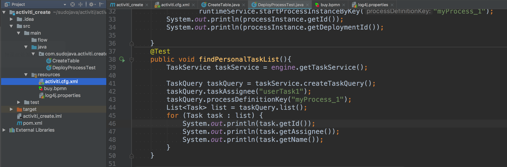
以下给出了两种配置 activiti.cfg.xml 文件的方式：
第一种方式：不带数据源DataSource
xxxxxxxxxx<beans xmlns="http://www.springframework.org/schema/beans" xmlns:xsi="http://www.w3.org/2001/XMLSchema-instance" xsi:schemaLocation="http://www.springframework.org/schema/beans http://www.springframework.org/schema/beans/spring-beans.xsd"> <bean id="processEngineConfiguration" class="org.activiti.engine.impl.cfg.StandaloneProcessEngineConfiguration"> <property name="jdbcUrl" value="jdbc:h2:mem:activiti;DB_CLOSE_DELAY=1000" /> <property name="jdbcDriver" value="org.h2.Driver" /> <property name="jdbcUsername" value="sa" /> <property name="jdbcPassword" value="" /> <property name="databaseSchemaUpdate" value="true" /> <property name="jobExecutorActivate" value="false" /> <property name="asyncExecutorEnabled" value="true" /> <property name="asyncExecutorActivate" value="false" /> <property name="mailServerHost" value="mail.my-corp.com" /> <property name="mailServerPort" value="5025" /> </bean></beans>第二种方式：带有数据源DataSource
xxxxxxxxxx <beans xmlns="http://www.springframework.org/schema/beans" xmlns:xsi="http://www.w3.org/2001/XMLSchema-instance" xmlns:context="http://www.springframework.org/schema/context" xsi:schemaLocation="http://www.springframework.org/schema/beans http://www.springframework.org/schema/beans/spring-beans.xsd http://www.springframework.org/schema/mvc http://www.springframework.org/schema/context http://www.springframework.org/schema/context/spring-context.xsd"> <!--配置数据源--> <bean id="dataSource" class="org.apache.commons.dbcp.BasicDataSource"> <property name="driverClassName" value="com.mysql.jdbc.Driver"/> <!--配置数据库的中文乱码--> <property name="url" value="jdbc:mysql://localhost:3306/activiti?useUnicode=true&characterEncoding=UTF-8"/> <property name="username" value="root"/> <property name="password" value="root"/> <property name="maxActive" value="3"/> <property name="maxIdle" value="1"/> </bean> <bean id="processEngineConfiguration" class="org.activiti.engine.impl.cfg.StandaloneInMemProcessEngineConfiguration"> <property name="dataSource" ref="dataSource"/> <property name="databaseSchemaUpdate" value="true"/> </bean></beans>4.2.2、读取activiti.cfg.xml配置文件
虽然以上的配置都是有spring的配置属性，但是并不代表需要直接运行在spring的环境中。
xxxxxxxxxxProcessEngineConfiguration.createProcessEngineConfigurationFromResourceDefault();ProcessEngineConfiguration.createProcessEngineConfigurationFromResource(String resource);ProcessEngineConfiguration.createProcessEngineConfigurationFromResource(String resource, String beanName);ProcessEngineConfiguration.createProcessEngineConfigurationFromInputStream(InputStream inputStream);ProcessEngineConfiguration.createProcessEngineConfigurationFromInputStream(InputStream inputStream, String beanName);或者直接通过纯java代码来构建ProcessEngine流程引擎的类。
xxxxxxxxxxProcessEngine processEngine = ProcessEngineConfiguration.createStandaloneInMemProcessEngineConfiguration() .setDatabaseSchemaUpdate(ProcessEngineConfiguration.DB_SCHEMA_UPDATE_FALSE) .setJdbcUrl("jdbc:h2:mem:my-own-db;DB_CLOSE_DELAY=1000") .setAsyncExecutorEnabled(true) .setAsyncExecutorActivate(false) .buildProcessEngine();4.2.3、关于ProcessEngineConfiguration构建ProcessEngine多种方式
- org.activiti.engine.impl.cfg.StandaloneProcessEngineConfiguration：流程引擎以独立的方式使用。Activiti将负责处理交易。默认情况下，只有当引擎引导时才会检查数据库（如果没有Activiti模式或模式版本不正确，则抛出异常）。
- org.activiti.engine.impl.cfg.StandaloneInMemProcessEngineConfiguration：这是用于单元测试目的的便利类。Activiti将负责处理交易。默认使用H2内存数据库。当引擎启动并关闭时，数据库将被创建和删除。使用这个时，可能不需要额外的配置（例如使用作业执行器或邮件功能时除外）。
- org.activiti.spring.SpringProcessEngineConfiguration：在Spring环境中使用流程引擎时使用。有关更多信息，请参阅Spring集成部分。
- org.activiti.engine.impl.cfg.JtaProcessEngineConfiguration：当引擎以独立模式运行时使用JTA事务。
4.2.4、关于数据的配置参数说明
配置Activiti引擎将使用的数据库有两种方法。第一个选项是定义数据库的JDBC属性：
- jdbcUrl：数据库的JDBC URL。
- jdbcDriver：实现驱动程序的特定数据库类型。
- jdbcUsername：用于连接数据库的用户名。
- jdbcPassword：密码连接到数据库。
基于提供的JDBC属性构建的数据源将具有默认的MyBatis连接池设置。可以选择将以下属性设置为调整该连接池（取自MyBatis文档）：
- jdbcMaxActiveConnections：连接池在任何时候最多可以包含的活动连接数。默认值为10。
- jdbcMaxIdleConnections：连接池在任何时候最多可以包含的空闲连接数。
- jdbcMaxCheckoutTime：在强制返回连接之前，可以从连接池中检出连接的时间（以毫秒为单位）。默认值为20000（20秒）。
- jdbcMaxWaitTime：这是一个低级别的设置，使池有机会打印日志状态，并重新尝试连接获取，在异常长时间的情况下（以避免如果池配置错误，则会永远失败）默认是20000（20秒）。
示例数据库配置：
xxxxxxxxxx<property name="jdbcUrl" value="jdbc:h2:mem:activiti;DB_CLOSE_DELAY=1000" /><property name="jdbcDriver" value="org.h2.Driver" /><property name="jdbcUsername" value="sa" /><property name="jdbcPassword" value="" />或者，javax.sql.DataSource可以使用实现（例如Apache Commons的 DBCP ）：
xxxxxxxxxx<bean id="dataSource" class="org.apache.commons.dbcp.BasicDataSource" > <property name="driverClassName" value="com.mysql.jdbc.Driver" /> <property name="url" value="jdbc:mysql://localhost:3306/activiti" /> <property name="username" value="activiti" /> <property name="password" value="activiti" /> <property name="defaultAutoCommit" value="false" /></bean><bean id="processEngineConfiguration" class="org.activiti.engine.impl.cfg.StandaloneProcessEngineConfiguration"> <property name="dataSource" ref="dataSource" /> ...其中，在processEngineConfiguration配置属性中有三种情况：
databaseSchemaUpdate：允许在进程引擎启动和关闭时设置策略来处理数据库模式。
false（默认）：当创建流程引擎时，检查数据库模式对库的版本，如果版本不匹配则抛出异常。true：在构建流程引擎时，执行检查，如果需要，执行模式的更新。如果模式不存在，则创建它。- create-drop：在创建流程引擎时创建模式，并在流程引擎关闭时删除模式。
4.3、Activiti所支持数据库类型
| Activiti database type | Example JDBC URL | Notes |
|---|---|---|
| h2 | jdbc:h2:tcp://localhost/activiti | Default configured database |
| mysql | jdbc:mysql://localhost:3306/activiti?autoReconnect=true | Tested using mysql-connector-java database driver |
| oracle | jdbc:oracle:thin:@localhost:1521:xe | |
| postgres | jdbc:postgresql://localhost:5432/activiti | |
| db2 | jdbc:db2://localhost:50000/activiti | |
| mssql | jdbc:sqlserver://localhost:1433;databaseName=activiti (jdbc.driver=com.microsoft.sqlserver.jdbc.SQLServerDriver) OR jdbc:jtds:sqlserver://localhost:1433/activiti (jdbc.driver=net.sourceforge.jtds.jdbc.Driver) | Tested using Microsoft JDBC Driver 4.0 (sqljdbc4.jar) and JTDS Driver |
4.4、Activiti创建的数据表
Activiti一共有23张表其中所有的表都是以ACT_.*开始的。
- ACT_RE_ ：RE代表
repository。具有此前缀的表包含静态*信息，例如流程定义和流程资源（图像，规则等）。 - ACT_RU_ ：RU*代表
runtime。这些是包含流程实例，用户任务，变量，作业等的运行时数据的运行时表。Activiti仅在流程实例执行期间存储运行时数据，并在进程实例结束时删除记录。这使得运行时间表保持不间断的快速。 - ACT_ID_ ：ID*代表
identity。这些表包含身份信息，如用户，组等。 - ACT_HI_ ：HI*代表
history。这些是包含历史数据的表，例如过去的流程实例，变量，任务等。 - ACT_GE_ *：
general数据，用于各种用例。
4.5、创建一个Java类初始化Activiti的数据库
xxxxxxxxxxpackage com.sudojava.commons;import org.activiti.engine.ProcessEngine;import org.activiti.engine.ProcessEngineConfiguration;import org.activiti.engine.ProcessEngines;import org.junit.Test;public class CreateInitTableUtils { public void createTable(){ ProcessEngineConfiguration configuration = ProcessEngineConfiguration.createProcessEngineConfigurationFromResource("activiti.cfg.xml"); //ProcessEngines.getDefaultProcessEngine(); ProcessEngine processEngine = configuration.buildProcessEngine(); System.out.println(processEngine); }}第五章：Activiti整体结构图
1、流程引擎是整个activiti的核心，所有的service都需要通过流程引擎来获得。
2、流程引擎会在创建的时候检查数据库表是否存在，如果不存在则会跑出异常，若要让引擎自动建表，则需要在配置文件添加。
3、activiti支持链式编程。

5.1、Service服务说明
5.1.1、RepositoryService仓库服务
仓库服务是存储相关的服务，一般用来部署流程文件，获取流程文件，查询流程定义信息等操作，是引擎中的一个重要的服务。
xxxxxxxxxx/** 仓库服务 */ RepositoryService repositoryService = engine.getRepositoryService(); 5.1.2、运行时服务
流程运行时的流程实例，流程定义，流程版本，流程节点等信息，使用运行时服务操作，是引擎中的一个重要的服务
xxxxxxxxxx/** 运行时服务 */ RuntimeService runtimeService = engine.getRuntimeService(); 5.1.3、任务服务
流程运行时的会产生任务，接收、办理、完成等操作使用任务服务完成，是引擎中的一个重要的服务
xxxxxxxxxx/** 任务服务 */ TaskService taskService = engine.getTaskService(); 5.1.4、认证服务
流程运行过程中的一些用户信息，组信息等操作使用认证服务，但是认证服务一般只作为辅助，每一个系统都有一个比较完整的人员系统
xxxxxxxxxx/** 认证服务 */ //一般不使用自带的认证服务，每个系统都有自己的认证系统 IdentityService identityService = engine.getIdentityService(); 5.1.5、历史服务
流程运行时，和运行完成之后的一些历史信息，包括历史任务，历史节点等，是引擎中的一个重要的服务
xxxxxxxxxx/** 历史服务 */ HistoryService historyService = engine.getHistoryService();5.1.6、历史服务
流程运行时的任务表单信息，是引擎中的一个辅助的服务
xxxxxxxxxx/** 表单服务 */ FormService formService = engine.getFormService(); 第六章：Process流程的定义和部署维护
本章节我们主要讲解Activiti中流程的相关内容，包括流程的部署、查看、删除和修改等操作。
流程定义文件：一般扩展名为bpmn。
流程定义的图片：采用BPMN2.0规范的各种图形描绘，生成的是png图片格式。
下面我们来给大家介绍流程部署的三种方式：
6.1、采用classpath方式
xxxxxxxxxxpublic class DeployProcessTest { private ProcessEngine engine = ProcessEngines.getDefaultProcessEngine(); public void deployProcessByClassPath(){ Deployment deployment = engine.getRepositoryService() .createDeployment().name("第一个流程定义") .addClasspathResource("buy.bpmn") .deploy(); System.out.println(deployment.getDeploymentTime()); System.out.println(deployment.getId()); } }6.2、采用InputStream流的方式
使用InputStream方式部署流程文件需要传入一个输入流的资源名称，输入流的来源是不受限制的，可以从classpath中读取，也可以从一个绝对路径文件中读取，也可以从网络上获取。
xxxxxxxxxxpublic class DeployProcessTest { private ProcessEngine engine = ProcessEngines.getDefaultProcessEngine(); public void deployProcess(){ RepositoryService repositoryService = engine.getRepositoryService(); InputStream inputStream = this.getClass().getClassLoader().getResourceAsStream("buy.bpmn"); Deployment deployment = repositoryService.createDeployment().addInputStream("buy.bpmn",inputStream).deploy(); System.out.println(deployment.getDeploymentTime()); System.out.println(deployment.getId()); }}6.3、在用zip压缩流的方式
以上都是部署的是单个流程文件，如果在实际开发中要部署多个流程文件，我们可以将多个文件压缩成.zip格式，进行部署。
xxxxxxxxxx public void deployementProcessDefinitionByzip(){ //从classpath路径下读取资源文件 InputStream in = this.getClass().getClassLoader().getResourceAsStream("buy.zip"); ZipInputStream zipInputStream = new ZipInputStream(in); Deployment deployment = processEngine.getRepositoryService()//获取流程定义和部署对象相关的Service .createDeployment()//创建部署对象 .addZipInputStream(zipInputStream)//使用zip方式部署，将helloworld.bpmn和helloworld.png压缩成zip格式的文件 .deploy();//完成部署 System.out.println("部署ID："+deployment.getId());//1 System.out.println("部署时间："+deployment.getDeploymentTime()); } 部署流程文件的时候一般都会操作以下三张表：
a) act_re_deployment
存放流程定义的显示名和部署时间，每部署一次增加一条记录
b) act_re_procdef
存放流程定义的属性信息，部署每个新的流程定义都会在这张表中增加一条记录。
c) act_ge_bytearray
存储流程定义相关的部署信息。即流程定义文档的存放地。
6.4、流程定义的删除
如果我们要删除流程定义的部署，实际上是属于仓库服务，所有我们要先得到RepositoryService对象，
如果该流程定义下没有正常运行的流程，则可以用普通删除，如果有关联信息，则用级联删除，一般删除操作的权限都是有超级管理员来完成的。
xxxxxxxxxx public void deleteDeployProcessByID(){ // 删除发布信息 String deploymentId = "1"; //采用级联删除方式 engine.getRepositoryService() .deleteDeployment(deploymentId,true); } 6.5、查看流程定义
xxxxxxxxxx/** * 查看流程定义 * 流程定义 ProcessDefinition * id : {key}:{version}:{随机值} * name ： 对应流程文件process节点的name属性 * key ： 对应流程文件process节点的id属性 * version ： 发布时自动生成的。如果是第一发布的流程，veresion默认从1开始；如果当前流程引擎中已存在相同key的流程，则找到当前key对应的最高版本号，在最高版本号上加1 */public void queryProcessDefinition() throws Exception { // 获取仓库服务对象 RepositoryService repositoryService = processEngine.getRepositoryService(); // 获取流程定义查询对象 ProcessDefinitionQuery processDefinitionQuery = repositoryService.createProcessDefinitionQuery(); // 配置查询对象 processDefinitionQuery //添加过滤条件// .processDefinitionName(processDefinitionName)// .processDefinitionId(processDefinitionId)// .processDefinitionKey(processDefinitionKey) //分页条件// .listPage(firstResult, maxResults) //排序条件 .orderByProcessDefinitionVersion().desc(); /** * 执行查询 * list : 执行后返回一个集合 * singelResult 执行后，首先检测结果长度是否为1，如果为一则返回第一条数据；如果不唯一，抛出异常 * count： 统计符合条件的结果数量 */ List<ProcessDefinition> pds = processDefinitionQuery.list(); // 遍历集合，查看内容 for (ProcessDefinition pd : pds) { System.out.print("id:" + pd.getId() +","); System.out.print("name:" + pd.getName() +","); System.out.print("key:" + pd.getKey() +","); System.out.println("version:" + pd.getVersion()); } }6.6、流程定义文件的查询
流程定义部署的功能一班是由开发人员登录业务系统，进行部署的，部署的文件为bpmn文件或者是压缩文件，开发人员是可以查询该文件的，但是对于一般用户只需要查看部署之后生成的png图片即可。
xxxxxxxxxx public void queryProcessDefinitionResource() throws IOException{ //bpmn文件和png文件 RepositoryService repositoryService = engine.getRepositoryService(); String processDefinitionID = "myProcess_1:1:4"; ProcessDefinition processDefinition = repositoryService.createProcessDefinitionQuery().processDefinitionId(processDefinitionID) .singleResult(); String deploymentID = processDefinition.getDeploymentId(); String resourceName_bpmn = processDefinition.getResourceName(); InputStream inputStream_bmpn = repositoryService.getResourceAsStream(deploymentID,resourceName_bpmn); //读取生成的图片信息 String resourceName_png = processDefinition.getDiagramResourceName(); InputStream inputStream_png = repositoryService.getResourceAsStream(deploymentID,resourceName_bpmn); //构造一个输出流 File file_bpmn = new File("/Users/luoliwen/Desktop/"+resourceName_bpmn); File file_png = new File("/Users/luoliwen/Desktop/"+resourceName_png); FileOutputStream outputStream1 = new FileOutputStream(file_bpmn); FileOutputStream outputStream2 = new FileOutputStream(file_png); byte[] data = new byte[1024]; int len = -1; while((len = inputStream_bmpn.read(data))!=-1){ outputStream1.write(data,0,len); } outputStream1.close(); while((len = inputStream_png.read(data))!=-1){ outputStream2.write(data,0,len); } outputStream2.close(); }6.7、流程发布信息查询
流程发布信息主要是管理流程发布的一些信息，包括发布名称、ID、发布时间、类别、赋值ID等信息。
xxxxxxxxxx public void deployProcess() { DeploymentBuilder builder = repositoryService.createDeployment(); String processFileName = "borrow.bpmn"; InputStream inputStream = this.getClass().getClassLoader().getResourceAsStream("borrow.bpmn"); builder.addInputStream(processFileName, inputStream) .name("请假流程").category("公司普通员工请假流程").tenantId("10023").deploy(); } public void queryProcess(){ //请假可以按照指定的 repositoryService.createDeploymentQuery().deploymentNameLike("请假流程").list().forEach(new Consumer<Deployment>() { public void accept(Deployment deployment) { System.out.println(deployment.getName()); System.out.println(deployment.getId()); System.out.println(deployment.getDeploymentTime()); System.out.println(deployment.getCategory()); System.out.println(deployment.getTenantId()); } }); }第七章：Activiti用户与用户组的关系
在Activiti中默认建立了用户表，通过用户表可以构建简单的的用户管理功能。下面我们来看看Activiti给我们提供的四张关于用户和组的表。
7.1、表结构
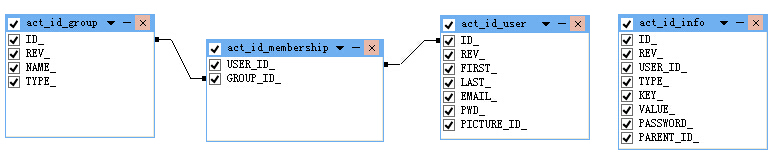
1、从表的名字可以看出来，activiti其实提供了一个简单的用户表结构，用户组与用户之间通过映射表进行关联，用户信息是一个单独的表。
2、如果要扩展成权限表，只需要增加一个权限表，然后和用户表进行映射，或者和用户组进行映射，即可成为一个简单的权限管理结构表。
3、用户体系表和activiti的其他表没有外键关联，说明acitivi允许你使用自己创建的用户体系表，这样可以和spring security或者shiro容易的结合在一起。
7.2、操作用户组和用户表
1、创建用户组
xxxxxxxxxx private ProcessEngine engine = ProcessEngines.getDefaultProcessEngine(); public void addGroup() { IdentityService identityService = engine.getIdentityService(); Group groupEntity = identityService.newGroup("1001"); groupEntity.setName("超级管理员"); groupEntity.setType("administrator"); identityService.saveGroup(groupEntity); }2、保存删除用户组
xxxxxxxxxxidentityService.saveGroup(group);identityService.deleteGroup("1");3、查询用户组
xxxxxxxxxx//调用listPage方法，从索引为2的记录开始，查询3条记录List<Group> datas = identityService.createGroupQuery().list(); for (Group data : datas) { System.out.println(data.getId() + "---" + data.getName() + " ");}//其他类似查询方法identityService.createGroupQuery().listPage();//分页返回查询结果identityService.createGroupQuery().count();//结果总数identityService.createGroupQuery().groupName("managerA").singleResult();//查询到多个时会抛出异常identityService.createGroupQuery().groupNameLike("%managerA%").singleResult();//identityService.createGroupQuery().groupId("1").singleResult();//identityService.createGroupQuery().groupType("typeA").singleResult();//identityService.createGroupQuery().orderByGroupId().asc().list();//结果升序identityService.createGroupQuery().orderByGroupName().desc().list();//结果降序4、添加、保存、删除用户
xxxxxxxxxx public void addUser() { IdentityService identityService = engine.getIdentityService(); User user = identityService.newUser("10001"); user.setEmail("luo@sina.com"); user.setFirstName("luo"); user.setLastName("liwen"); user.setPassword("admin"); identityService.saveUser(user);//保存用户 identityService.deleteUser("10001");//删除用户 }5、验证用户登录信息
xxxxxxxxxxboolean flag = identityService.checkPassword("admin","admin");6、设置用户信息表以及相关查询
xxxxxxxxxx//设置用户info信息，设置后type字段变成userinfoidentityService.setUserInfo("INFO表USER_ID","INFO表KEY","INFO表VALUE")；//设置账号信息，设置后TYPE字段变成account,一个用户可以用多个账号identityService.setUserAccount("INFO表USER_ID","INFO表KEY","INFO表VALUE");//查询相关信息identityService.getUserInfo("INFO表USER_ID","INFO表KEY");7.3、用户与用户组关系
1、设置用户和用户组关系
xxxxxxxxxxidentityService.createMembership("用户ID","组ID");//绑定identityService.deleteMembership("用户ID","组ID");//删除2、查询用户与用户组关系
xxxxxxxxxxList<Group> datas = identityService.createGroupQuery().groupMember(user.getId()).list();List<User> datas = identityService.createUserQuery().MemberOfGroup(group.getId()).list();第八章：Activiti流程实例和个人任务管理
8.1、启动流程实例
我们必须要先启动一个流程的实例processInstance，Activiti才能去管理控制整个业务流程。
流程实例(ProcessInstance)和流程定义(ProcessDefinition)的关系，有点像类和实例对象的关系，ProcessDefinition是指整个流程步骤的说明，而ProcessInstance是指流程定义从开始到执行结束的过程。
执行对象(Execution)
在学习流程实例的过程中，提到一个执行对象Execution，Execution是按照ProcessDefinition的规则执行的当前路线，如果
ProcessDefinition只有一个执行路线的话，也就是我们俗称串行执行路线，那么Execution和ProcessInstance就是一一对应关系，如果一个ProcessDefinition中有多个执行路线的话，Execution和ProcessInstance可能是同一个也可能不是同一个。所以得出结论：一个流程中ProcessInstance有且只能有一个，而Execution可以存在多个。
运行结果：
流程实例ID:10001 流程定义ID:myProcess_1:1:4
1)在数据库的act_ru_execution正在执行的执行对象表中插入一条记录
2)在数据库的act_hi_procinst程实例的历史表中插入一条记录
3)在数据库的act_hi_actinst活动节点的历史表中插入一条记录
4)我们图中节点都是任务节点，所以同时也会在act_ru_task流程实例的历史表添加一条记录
5)在数据库的act_hi_taskinst任务历史表中也插入一条记录。
xxxxxxxxxxpublic void startProcessInstance2(){ RuntimeService runtimeService = manager.getRuntimeService(); Map<String, Object> variables = new HashMap<String, Object>(); variables.put("userID", "zhang"); ProcessInstance processInstance = runtimeService.startProcessInstanceByKey("myProcess_1",variables); System.out.println("流程实例ID:" + processInstance.getId()); System.out.println("流程定义ID:" + processInstance.getProcessDefinitionId());}8.2、启动个人任务的三种方式PersonalTask
个人任务PersonalTask指的是操作的任务，个人任务是当前节点的执行者。
BPMN流程图
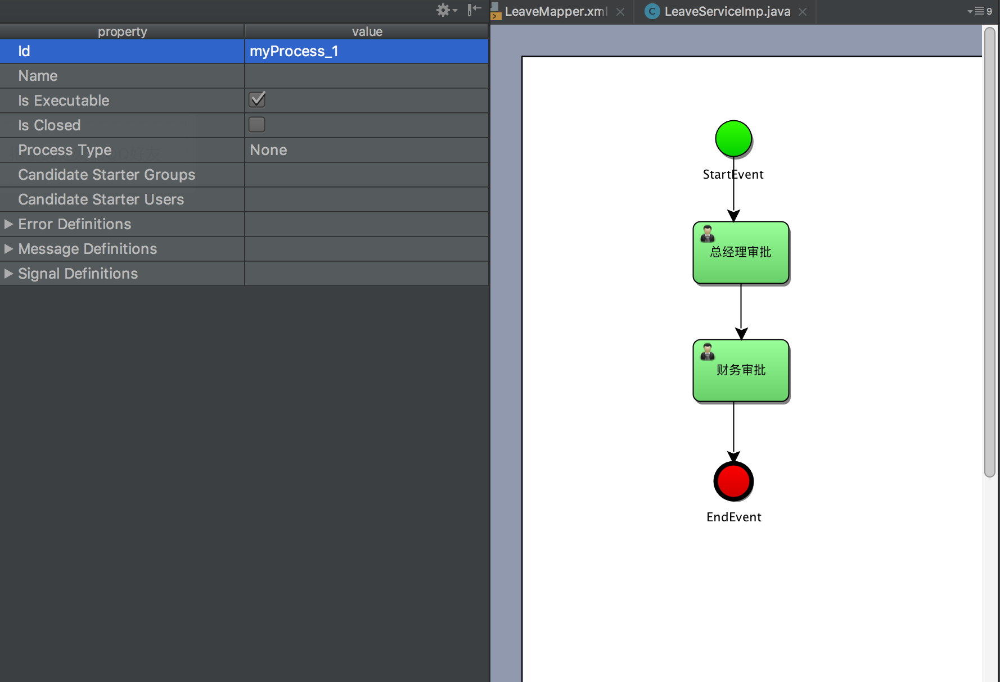
第一种：直接指定办理人
在流程图中直接配置任务节点，指定办理人为“王小明”，这个中方式仅仅限于测试代码使用，实际开发中并不常用。
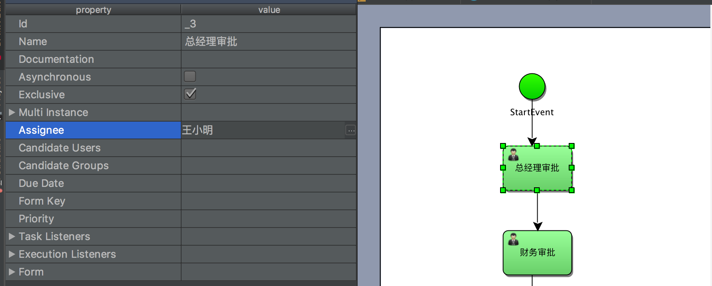
测试代码
1、发布流程
xxxxxxxxxx/** * 发布流程 * * @param processFileName */public void deployProcess(String processFileName) { InputStream inputStream = this.getClass().getClassLoader().getResourceAsStream(processFileName); RepositoryService repositoryService = manager.getRepositoryService(); repositoryService.createDeployment().addInputStream(processFileName, inputStream).deploy();}2、启动流程
xxxxxxxxxxpublic void startProcessInstance2(){ RuntimeService runtimeService = manager.getRuntimeService(); ProcessInstance processInstance = runtimeService.startProcessInstanceByKey("myProcess_1"); System.out.println("流程实例ID:" + processInstance.getId()); System.out.println("流程定义ID:" + processInstance.getProcessDefinitionId());}3、查看我的个人待办事宜
xxxxxxxxxxTaskService taskService = manager.getTaskService();TaskQuery taskQuery = taskService.createTaskQuery();String userID = "王小明";//获取运行时状态RuntimeService runtimeService = manager.getRuntimeService();//如何获取业务流程中的bussinessKey，可以通过个人待办任务获取流程实例的ID，最终来获取bussinessKeytaskQuery.taskAssignee(userID);taskQuery.processDefinitionKey(processKey);List<Task> list = taskQuery.list(); for (Task task : list) { System.out.println(task.getId()); System.out.println(task.getAssignee()); System.out.println(task.getName()); System.out.println(task.getOwner()); System.out.println(task.getCategory()); System.out.println(task.getCreateTime()); System.out.println(task.getExecutionId()); System.out.println(task.getTaskDefinitionKey()); System.out.println(task.getProcessDefinitionId()); }4、完成我的个人待办事宜
xxxxxxxxxx public void completeTask(){ String taskId = "3209"; processEngine.getTaskService()// .complete(taskId);// System.out.println("完成任务"); } 第二种：使用Java EE6规范的UEL表达式
UEL是Java EE6规范的一部分，UEL(Unified Expression Language) 即统一的表达式语言，Activiti支持两种UEL表达式：UEL-VALUE、UEL-METHOD方式。
使用步骤：
- 在任务的节点，不直接指定处理人的ID，设置处理人的表达式为${assignee}
- 在启动一个流程实例的时候设置启动动态的变量的assignee的值
- 在程序执行过程中，使用UEL表达式获取指定的办理人
BPMN流程图
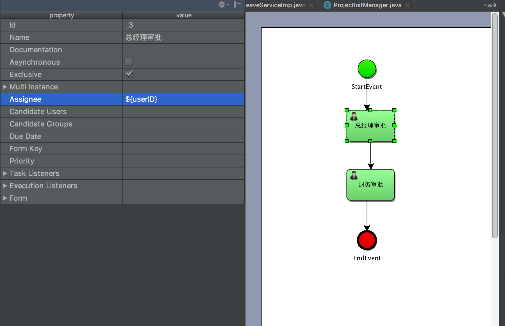
代码演示
xxxxxxxxxxpublic void startProcessInstance2(String processName) { RuntimeService runtimeService = manager.getRuntimeService(); Map<String,Object> variable = new HashMap<>(); //指定当前节点的办理人是zhangsan variable.put("userID","zhangsan"); ProcessInstance processInstance = runtimeService.startProcessInstanceByKey(processName,variable); System.out.println("---->>"+processInstance.getId()); System.out.println("---->>"+processInstance.getProcessDefinitionName()); System.out.println("---->>"+processInstance.getProcessDefinitionId()); System.out.println("---->>"+processInstance.getBusinessKey());}使用POJO类
启动的流程时候的参数的value，不仅仅可以是String类型，还可以是Object对象（序列化的），Map,List,Array
我们这里采用对象做演示，执行步骤如下
1、设置流程的第一个节点动态的值为${user.userId}，他会默认查找变量name为user的对应的值的getUserId获取值，重新部署流程定义
2、启动流程时，设置这个user的javabean到流程的全局变量中
3、查看走到这个节点的当前任务的处理人是否是我们user的userId变量的值
4、设置节点UEL表达式：${user.userID}
代码演示
xxxxxxxxxxpackage com.sudojava.activiti.domain;public class User { private String userID; private String name; private String pswd; public User() { } public User(String userID, String name, String pswd) { this.userID = userID; this.name = name; this.pswd = pswd; } public String getUserID() { return userID; } public void setUserID(String userID) { this.userID = userID; } public String getName() { return name; } public void setName(String name) { this.name = name; } public String getPswd() { return pswd; } public void setPswd(String pswd) { this.pswd = pswd; } public String toString() { return "User{" + "userID='" + userID + '\'' + ", name='" + name + '\'' + ", pswd='" + pswd + '\'' + '}'; }}启动流程
xxxxxxxxxxpublic void startProcessInstance2(String processName) { RuntimeService runtimeService = manager.getRuntimeService(); Map<String,Object> variable = new HashMap<>(); User user = new User(); user.setName("admin"); user.setPswd("admin"); user.setUserID("zhangsan"); //指定当前节点的办理人是zhangsan variable.put("user",user); ProcessInstance processInstance = runtimeService.startProcessInstanceByKey(processName,variable); System.out.println("---->>"+processInstance.getId()); System.out.println("---->>"+processInstance.getProcessDefinitionName()); System.out.println("---->>"+processInstance.getProcessDefinitionId()); System.out.println("---->>"+processInstance.getBusinessKey());}使用UEL-METHOD
执行步骤
1、设置节点的执行人为${method.getUserNameByUserId(userId)} ，其中method方法是我们注入到spring中的一个类，userId是我们设置的全局变量
2、将method方法注入到activiti的processEngineConfiguration的bean中（在我们的activiti.cfg.xml中）
3、启动一个流程设置全局变量userId作为启动参数,看看是否走到这个节点的处理人是我们method方法getUserNameByUserId返回的name
代码演示
xxxxxxxxxxpublic class CommandMethod{ public String getUserIDById(int userId){ //查询数据库表中的User表 return "activiti"+userId; }}activiti-cfg.xml配置
xxxxxxxxxx <beans xmlns="http://www.springframework.org/schema/beans" xmlns:xsi="http://www.w3.org/2001/XMLSchema-instance" xsi:schemaLocation="http://www.springframework.org/schema/beans http://www.springframework.org/schema/beans/spring-beans.xsd"> <bean id="dataSource" class="org.apache.commons.dbcp.BasicDataSource"> <property name="maxActive" value="3"/> <property name="maxIdle" value="1"/> <property name="username" value="root"/> <property name="password" value="root"/> <property name="url" value="jdbc:mysql://localhost:3306/activiti2?useUnicode=true&characterEncoding=UTF-8"/> <property name="driverClassName" value="com.mysql.jdbc.Driver"/> </bean> <bean id="commandMethod" class="com.sudojava.activiti.bean.CommandMethod"/> <bean id="processEngineConfiguration" class="org.activiti.spring.SpringProcessEngineConfiguration"> <property name="dataSource" ref="dataSource"/> <property name="transactionManager" ref="transactionManager"/> <property name="databaseSchemaUpdate" value="true"/> <property name="beans"> <map> <entry key="commandMethod" value="commandMethod"></entry> </map> </property> </bean> <!-- (事务管理)transaction manager, use JtaTransactionManager for global tx --> <bean id="transactionManager" class="org.springframework.jdbc.datasource.DataSourceTransactionManager"> <property name="dataSource" ref="dataSource"/> </bean></beans>第三种：使用监听器TaskListenerImpl 来设置任务办理人
BPMN图
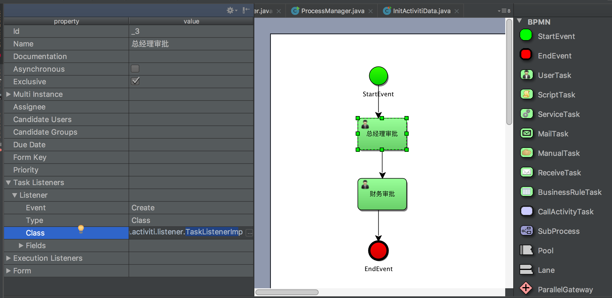
核心代码
xxxxxxxxxxpackage com.sudojava.activiti.listener;import org.activiti.engine.delegate.DelegateTask;import org.activiti.engine.delegate.TaskListener;public class TaskListenerImp implements TaskListener { //设置待办事宜的处理人 public void notify(DelegateTask delegateTask) { delegateTask.setAssignee("zhangsan"); }} xxxxxxxxxxpublic void findPersonalTask() { String userID = "zhangsan"; manager.getTaskService().createTaskQuery().taskAssignee(userID).list().forEach(new Consumer<Task>() { public void accept(Task task) { System.out.println("id=" + task.getId()); System.out.println("name=" + task.getName()); System.out.println("assinee=" + task.getAssignee()); System.out.println("createTime=" + task.getCreateTime()); System.out.println("executionId=" + task.getExecutionId()); } });}第九章：Activiti集成Spring、Mybatis实现自定义表单
工程结构图：
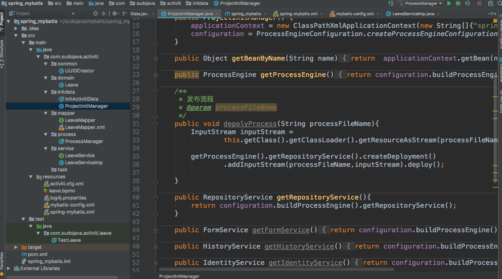
9.1、配置pom.xml
xxxxxxxxxx <project xmlns="http://maven.apache.org/POM/4.0.0" xmlns:xsi="http://www.w3.org/2001/XMLSchema-instance" xsi:schemaLocation="http://maven.apache.org/POM/4.0.0 http://maven.apache.org/xsd/maven-4.0.0.xsd"> <modelVersion>4.0.0</modelVersion> <groupId>com.sudojava.springmybatis</groupId> <artifactId>spring_mybatis</artifactId> <version>1.0-SNAPSHOT</version> <build> <plugins> <plugin> <groupId>org.apache.maven.plugins</groupId> <artifactId>maven-compiler-plugin</artifactId> <configuration> <source>1.8</source> <target>1.8</target> </configuration> </plugin> </plugins> <!--maven加载src下的xml文件--> <resources> <resource> <directory>src/main/java/</directory> <includes> <include>**/*.xml</include> </includes> </resource> </resources> </build> <dependencies> <dependency> <groupId>org.springframework</groupId> <artifactId>spring-core</artifactId> <version>4.3.6.RELEASE</version> </dependency> <dependency> <groupId>org.springframework</groupId> <artifactId>spring-context</artifactId> <version>4.3.6.RELEASE</version> </dependency> <dependency> <groupId>org.springframework</groupId> <artifactId>spring-test</artifactId> <version>4.3.6.RELEASE</version> </dependency> <dependency> <groupId>org.springframework</groupId> <artifactId>spring-tx</artifactId> <version>4.3.6.RELEASE</version> </dependency> <dependency> <groupId>org.activiti</groupId> <artifactId>activiti-spring</artifactId> <version>5.18.0</version> </dependency> <dependency> <groupId>org.activiti</groupId> <artifactId>activiti-engine</artifactId> <version>5.18.0</version> </dependency> <dependency> <groupId>org.springframework</groupId> <artifactId>spring-beans</artifactId> <version>4.3.6.RELEASE</version> </dependency> <!-- https://mvnrepository.com/artifact/org.mybatis.generator/mybatis-generator-core --> <dependency> <groupId>org.mybatis.generator</groupId> <artifactId>mybatis-generator-core</artifactId> <version>1.3.3</version> </dependency> <dependency> <groupId>org.mybatis</groupId> <artifactId>mybatis-spring</artifactId> <version>1.3.1</version> </dependency> <dependency> <groupId>org.mybatis</groupId> <artifactId>mybatis</artifactId> <version>3.4.4</version> </dependency> <dependency> <groupId>mysql</groupId> <artifactId>mysql-connector-java</artifactId> <version>5.1.44</version> </dependency> <dependency> <groupId>junit</groupId> <artifactId>junit</artifactId> <version>4.12</version> </dependency> <dependency> <groupId>org.slf4j</groupId> <artifactId>slf4j-api</artifactId> <version>1.7.10</version> </dependency> <dependency> <groupId>commons-dbcp</groupId> <artifactId>commons-dbcp</artifactId> <version>1.4</version> </dependency> <dependency> <groupId>org.slf4j</groupId> <artifactId>slf4j-log4j12</artifactId> <version>1.7.10</version> </dependency> </dependencies></project>9.2、配置Activiti工作的引擎和数据库连接
xxxxxxxxxx<?xml version="1.0" encoding="UTF-8"?><beans xmlns="http://www.springframework.org/schema/beans" xmlns:xsi="http://www.w3.org/2001/XMLSchema-instance" xsi:schemaLocation="http://www.springframework.org/schema/beans http://www.springframework.org/schema/beans/spring-beans.xsd"> <bean id="dataSource" class="org.apache.commons.dbcp.BasicDataSource"> <property name="maxActive" value="3"/> <property name="maxIdle" value="1"/> <property name="username" value="root"/> <property name="password" value="root"/> <property name="url" value="jdbc:mysql://localhost:3306/activiti2?useUnicode=true&characterEncoding=UTF-8"/> <property name="driverClassName" value="com.mysql.jdbc.Driver"/> </bean> <bean id="processEngineConfiguration" class="org.activiti.spring.SpringProcessEngineConfiguration"> <property name="dataSource" ref="dataSource"/> <property name="transactionManager" ref="transactionManager"/> <property name="databaseSchemaUpdate" value="true"/> </bean> <!-- (事务管理)transaction manager, use JtaTransactionManager for global tx --> <bean id="transactionManager" class="org.springframework.jdbc.datasource.DataSourceTransactionManager"> <property name="dataSource" ref="dataSource"/> </bean></beans>9.3、spring集成mybatis环境配置
xxxxxxxxxx <beans xmlns="http://www.springframework.org/schema/beans" xmlns:xsi="http://www.w3.org/2001/XMLSchema-instance" xmlns:p="http://www.springframework.org/schema/p" xmlns:aop="http://www.springframework.org/schema/aop" xmlns:context="http://www.springframework.org/schema/context" xmlns:jee="http://www.springframework.org/schema/jee" xmlns:tx="http://www.springframework.org/schema/tx" xsi:schemaLocation=" http://www.springframework.org/schema/aop http://www.springframework.org/schema/aop/spring-aop-4.0.xsd http://www.springframework.org/schema/beans http://www.springframework.org/schema/beans/spring-beans-4.0.xsd http://www.springframework.org/schema/context http://www.springframework.org/schema/context/spring-context-4.0.xsd http://www.springframework.org/schema/jee http://www.springframework.org/schema/jee/spring-jee-4.0.xsd http://www.springframework.org/schema/tx http://www.springframework.org/schema/tx/spring-tx-4.0.xsd"><context:component-scan base-package="com.sudojava.activiti"/> <bean id="dataSource" class="org.apache.commons.dbcp.BasicDataSource"> <property name="maxActive" value="3"/> <property name="maxIdle" value="1"/> <property name="username" value="root"/> <property name="password" value="root"/> <property name="url" value="jdbc:mysql://localhost:3306/activiti2?useUnicode=true&characterEncoding=UTF-8"/> <property name="driverClassName" value="com.mysql.jdbc.Driver"/> </bean> <!-- spring和MyBatis完美整合，不需要mybatis的配置映射文件 --> <bean id="sqlSessionFactory" class="org.mybatis.spring.SqlSessionFactoryBean"> <property name="dataSource" ref="dataSource" /> <!-- 自动扫描mapping.xml文件，**表示迭代查找 --> <!--<property name="mapperLocations" value="classpath:com/sudojava/activiti/**/*.xml" />--> <property name="configLocation" value="classpath:mybatis-config.xml"/> </bean> <!-- DAO接口所在包名，Spring会自动查找其下的类 ,包下的类需要使用@MapperScan注解,否则容器注入会失败 --> <bean class="org.mybatis.spring.mapper.MapperScannerConfigurer"> <property name="basePackage" value="com.sudojava.activiti.mapper" /> <property name="sqlSessionFactoryBeanName" value="sqlSessionFactory" /> </bean> <!-- (事务管理)transaction manager, use JtaTransactionManager for global tx --> <bean id="transactionManager" class="org.springframework.jdbc.datasource.DataSourceTransactionManager"> <property name="dataSource" ref="dataSource" /> </bean></beans>9.4、配置mybatis-config.xml
xxxxxxxxxx <configuration> <!-- 别名 --> <typeAliases> <package name="com.sudojava.activiti.domain"/> </typeAliases></configuration>9.5、绘制请假流程单
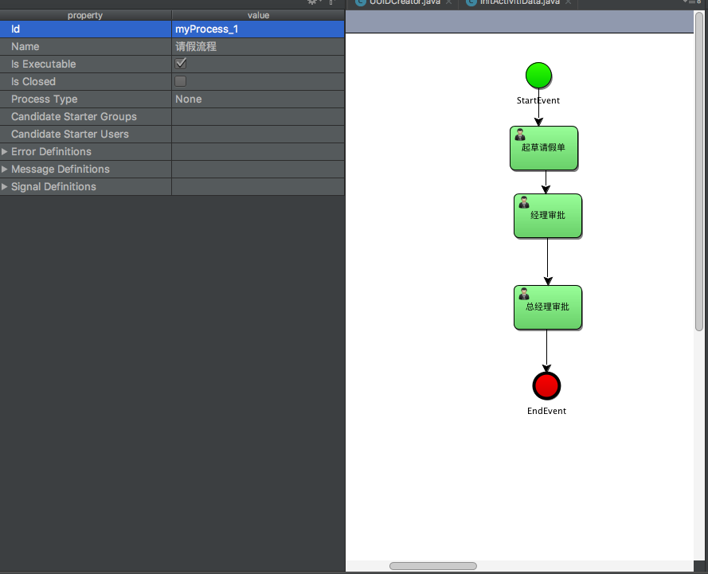
9.6、初始化Activiti数据库操作
xxxxxxxxxxpackage com.sudojava.activiti.initdata;import org.activiti.engine.ProcessEngine;import org.activiti.engine.ProcessEngineConfiguration;import org.junit.Test;public class InitActivitiData { public void initData(){ ProcessEngineConfiguration configuration = ProcessEngineConfiguration.createProcessEngineConfigurationFromResource("activiti.cfg.xml"); ProcessEngine processEngine =configuration.buildProcessEngine(); System.out.println(processEngine); }}9.7、具体业务逻辑管理类
xxxxxxxxxxpackage com.sudojava.activiti.initdata;import org.activiti.engine.*;import org.springframework.context.ApplicationContext;import org.springframework.context.support.ClassPathXmlApplicationContext;import java.io.InputStream;public class ProjectInitManager { private ApplicationContext applicationContext; private ProcessEngineConfiguration configuration; public ProjectInitManager() { applicationContext = new ClassPathXmlApplicationContext(new String[]{"spring-mybatis.xml"}); configuration = ProcessEngineConfiguration.createProcessEngineConfigurationFromResource("activiti.cfg.xml"); } public Object getBeanByName(String name) { return applicationContext.getBean(name); } public ProcessEngine getProcessEngine(){ return configuration.buildProcessEngine(); } /** * 发布流程 * @param processFileName */ public void depolyProcess(String processFileName){ InputStream inputStream = this.getClass().getClassLoader().getResourceAsStream(processFileName); getProcessEngine().getRepositoryService().createDeployment() .addInputStream(processFileName,inputStream).deploy(); } public RepositoryService getRepositoryService(){ return configuration.buildProcessEngine().getRepositoryService(); } public FormService getFormService(){ return configuration.buildProcessEngine().getFormService(); } public HistoryService getHistoryService(){ return configuration.buildProcessEngine().getHistoryService(); } public IdentityService getIdentityService(){ return configuration.buildProcessEngine().getIdentityService(); } public ManagementService getManagementService(){ return configuration.buildProcessEngine().getManagementService(); } public RuntimeService getRuntimeService(){ return configuration.buildProcessEngine().getRuntimeService(); } public TaskService getTaskService(){ return configuration.buildProcessEngine().getTaskService(); } /** * 初始化数据库 */ public void initActivitiData(){ configuration.buildProcessEngine(); }}9.8编写请假单的实体类和service接口实现类
Leave请假单：
xxxxxxxxxxpackage com.sudojava.activiti.domain;public class Leave { private String id; private String leaveName; private String leaveReason; private Integer leaveDay; private String advise; public Leave(String id, String leaveName, String leaveReason, Integer leaveDay, String advise) { this.id = id; this.leaveName = leaveName; this.leaveReason = leaveReason; this.leaveDay = leaveDay; this.advise = advise; } public Leave() { } public String getId() { return id; } public void setId(String id) { this.id = id; } public String getLeaveName() { return leaveName; } public void setLeaveName(String leaveName) { this.leaveName = leaveName; } public String getLeaveReason() { return leaveReason; } public void setLeaveReason(String leaveReason) { this.leaveReason = leaveReason; } public Integer getLeaveDay() { return leaveDay; } public void setLeaveDay(Integer leaveDay) { this.leaveDay = leaveDay; } public String getAdvise() { return advise; } public void setAdvise(String advise) { this.advise = advise; } public String toString() { return "Leave{" + ", id=" + id + ", leaveName='" + leaveName + '\'' + ", leaveReason='" + leaveReason + '\'' + ", leaveDay=" + leaveDay + ", advise='" + advise + '\'' + '}'; }}LeaveService类
主要是实现对请假单的CRUD功能
xxxxxxxxxxpackage com.sudojava.activiti.service;import com.sudojava.activiti.domain.Leave;public interface LeaveService { public void saveLeave(Leave leave); public Leave findLeaveByID(String id); public void updateLeave(Leave leave); public void deleteLeaveByID(String id);}LeaveServiceImp实现类
xxxxxxxxxxpackage com.sudojava.activiti.service;import com.sudojava.activiti.domain.Leave;import com.sudojava.activiti.mapper.LeaveMapper;import org.springframework.stereotype.Service;import javax.annotation.Resource;("leaveService")public class LeaveServiceImp implements LeaveService { private LeaveMapper leaveMapper; public void saveLeave(Leave leave) { leaveMapper.saveLeave(leave); } public Leave findLeaveByID(String id) { return leaveMapper.findLeaveByID(id); } public void updateLeave(Leave leave) { leaveMapper.updateLeave(leave); } public void deleteLeaveByID(String id) { leaveMapper.deleteLeaveByID(id); }}9.9、mybatis接口以及mapper文件
MyBatis接口定义
xxxxxxxxxxpackage com.sudojava.activiti.mapper;import com.sudojava.activiti.domain.Leave;public interface LeaveMapper { public void saveLeave(Leave leave); public Leave findLeaveByID(String id); public void updateLeave(Leave leave); public void deleteLeaveByID(String id);}Mapper XML文件定义
xxxxxxxxxx <mapper namespace="com.sudojava.activiti.mapper.LeaveMapper"> <insert id="saveLeave" parameterType="com.sudojava.activiti.domain.Leave"> INSERT INTO leave1 (id,leaveName,leaveReason,leaveDay,advise) VALUES (#{id}, #{leaveName},#{leaveReason},#{leaveDay},#{advise}) </insert> <select id="findLeaveByID" resultType="com.sudojava.activiti.domain.Leave" parameterType="string"> select * from leave1 where id = #{id} </select> <update id="updateLeave" parameterType="com.sudojava.activiti.domain.Leave"> update leave1 set advise=#{advise} where id=#{id} </update> <delete id="deleteLeaveByID" parameterType="string"> DELETE * from leave1 where id = #{id} </delete></mapper>9.10、主键生成策略和核心测试类
UUID生成策略
xxxxxxxxxxpackage com.sudojava.activiti.common;import java.util.UUID;public class UUIDCreator { public static String createUUID(){ return UUID.randomUUID().toString().replaceAll("-","") .substring(1,25); }}核心测试类ProcessManager
xxxxxxxxxxpackage com.sudojava.activiti.process;import com.sudojava.activiti.common.UUIDCreator;import com.sudojava.activiti.domain.Leave;import com.sudojava.activiti.initdata.ProjectInitManager;import com.sudojava.activiti.service.LeaveService;import org.activiti.engine.RepositoryService;import org.activiti.engine.RuntimeService;import org.activiti.engine.TaskService;import org.activiti.engine.runtime.ProcessInstance;import org.activiti.engine.runtime.ProcessInstanceQuery;import org.activiti.engine.task.Task;import org.activiti.engine.task.TaskQuery;import java.io.FileInputStream;import java.io.IOException;import java.io.InputStream;import java.util.HashMap;import java.util.List;import java.util.Map;import java.util.function.Consumer;import java.util.zip.ZipInputStream;public class ProcessManager { private ProjectInitManager manager; public ProcessManager() { manager = new ProjectInitManager(); } public void initData() { manager.initActivitiData(); } /** * 发布流程 * * @param processFileName */ public void deployProcess(String processFileName) { InputStream inputStream = this.getClass().getClassLoader().getResourceAsStream(processFileName); RepositoryService repositoryService = manager.getRepositoryService(); repositoryService.createDeployment().addInputStream(processFileName, inputStream).deploy(); } /** * @param processFileName * @throws IOException */ public void deployProcessByZip(String processFileName) throws IOException { ZipInputStream zipInputStream = new ZipInputStream(new FileInputStream(processFileName)); RepositoryService repositoryService = manager.getRepositoryService(); repositoryService.createDeployment().addZipInputStream(zipInputStream).deploy(); } /** * @param id */ public void deleteProcessByID(String id) { RepositoryService repositoryService = manager.getRepositoryService(); repositoryService.deleteDeployment(id, true); } public void startProcessInstance() { RuntimeService runtimeService = manager.getRuntimeService(); //起草请假流程时候顺便填写请假单，直接调用自定义的service接口，把请假的信息写入数据库中 LeaveService leaveService = (LeaveService) manager.getBeanByName("leaveService"); Map<String, Object> variables = new HashMap<String, Object>(); variables.put("userID", "zhang"); String businessKey = UUIDCreator.createUUID(); ProcessInstance processInstance = runtimeService. startProcessInstanceByKey("myProcess_1", businessKey, variables); System.out.println("--->>" + processInstance.isSuspended());//无效 System.out.println("--->>" + processInstance.isEnded());//无效 Leave leave = new Leave(); leave.setId(businessKey); leave.setLeaveName("请假条"); leave.setLeaveDay(2); leave.setAdvise("同意"); leave.setLeaveReason("肚子疼"); leaveService.saveLeave(leave); } /** * 查询流程实例的相关信息 */ public void queryProcessInstance(){ RuntimeService runtimeService = manager.getRuntimeService(); ProcessInstanceQuery processInstanceQuery = runtimeService.createProcessInstanceQuery(); String processDefinitionKey = "myProcess_1"; processInstanceQuery.processDefinitionKey(processDefinitionKey).list().forEach(new Consumer<ProcessInstance>() { public void accept(ProcessInstance processInstance) { System.out.println("--流程实例的ID-->>"+processInstance.getId()); System.out.println("--流程业务的KEY-->>"+processInstance.getBusinessKey()); System.out.println("--流程实例的名称-->>"+processInstance.getName()); System.out.println("--流程定义的ID-->>"+processInstance.getProcessDefinitionId()); System.out.println("--流程当前活动节点的ID-->>"+processInstance.getActivityId()); System.out.println("---->>"+processInstance.getProcessDefinitionKey()); System.out.println("---->>"+processInstance.getProcessDefinitionName()); System.out.println("---->>"+processInstance.getTenantId()); System.out.println("---->>"+processInstance.getParentId()); System.out.println("---->>"+processInstance.getProcessDefinitionVersion()); System.out.println("---------------------------------------------"); } }); } /** * 结束我的待办事宜 * @param taskID * @param variables */ public void completePersonalTask(String taskID,Map<String, Object> variables){ manager.getTaskService().complete(taskID,variables); } public void findPersonalTaskList(String taskMan, String processKey) { TaskService taskService = manager.getTaskService(); TaskQuery taskQuery = taskService.createTaskQuery(); //获取运行时状态 RuntimeService runtimeService = manager.getRuntimeService(); //如何获取业务流程中的bussinessKey，可以通过个人待办任务获取流程实例的ID，最终来获取bussinessKey taskQuery.taskAssignee(taskMan); taskQuery.processDefinitionKey(processKey); LeaveService leaveService = (LeaveService) manager.getBeanByName("leaveService");//// Leave leave = leaveService.findLeaveByID(bussinessKey);// System.out.println(leave); List<Task> list = taskQuery.list(); for (Task task : list) { System.out.println(task.getId()); System.out.println(task.getAssignee()); System.out.println(task.getName()); System.out.println(task.getOwner()); System.out.println(task.getCategory()); System.out.println(task.getCreateTime()); System.out.println(task.getExecutionId()); System.out.println(task.getTaskDefinitionKey()); System.out.println(task.getProcessDefinitionId()); String bussinessKey = runtimeService.createProcessInstanceQuery() .processInstanceId(task.getProcessInstanceId()).singleResult().getBusinessKey(); Leave leave = leaveService.findLeaveByID(bussinessKey); System.out.println("---------------------" + leave + "------------------------"); } } public static void main(String[] args) { ProcessManager manager = new ProcessManager(); //manager.initData(); //manager.deployProcess("leave.bpmn"); //manager.startProcessInstance(); // manager.findPersonalTaskList("luo", "myProcess_1");// Map<String,Object> variables = new HashMap<>();// variables.put("userID","luo");// manager.completePersonalTask("5005", variables); manager.queryProcessInstance(); }}第十章：表单的介绍以及FormService使用
本章节主要讲解FormService的使用，以及Activiti不同的表单类型的应用。
在Activiti中一共有三种表单，动态表单、普通表单和外置表单。
10.1、获取动态表单的内容
如何获取在流程定义中表单的内容，Activiti提供了FormService的相关API获取流程启动节点的表单内容以及任务节点的表单内容。
RuntimeService提供了很多启动流程的API，命名规则请参考官网，都是以startProcessInstanceByXX方式来启动的，在启动中可以方式流程变量、指定businessKey等。
同样FormService也提供了启动流程的方法：
xxxxxxxxxxProcessInstance submitStartFormData(String processDefinitionId, Map<String,String> properties)//Start a new process instance with the user data that was entered as properties in a start form.ProcessInstance submitStartFormData(String processDefinitionId, String businessKey, Map<String,String> properties) //Start a new process instance with the user data that was entered as properties in a start form.从以上的方法中可以看出来，启动流程是根据processDefinitionId来启动的。
测试代码
xxxxxxxxxxpublic class MyFormService { private ProjectInitManager manager; public MyFormService() { manager = new ProjectInitManager(); } public void deployProcess(String fileName) { RepositoryService repositoryService = manager.getRepositoryService(); InputStream inputStream = this.getClass().getClassLoader() .getResourceAsStream(fileName); Deployment deployment = repositoryService.createDeployment() .addInputStream(fileName, inputStream) .name("测试form表单") .category("form表单的三种方式测试") .deploy(); System.out.println("--->>" + deployment.getId()); System.out.println("--->>" + deployment.getName()); } public void startProcessInstance(String processName) {//processName是流程的名称 ProcessDefinition definition = manager.getRepositoryService() .createProcessDefinitionQuery().processDefinitionKey(processName).latestVersion().singleResult(); System.out.println("---->>" + definition.getId()); FormService formService = manager.getFormService();//// StartFormData startFormData = formService.getStartFormData(definition.getId());//// System.out.println("--->>"+startFormData.getFormKey()); //启动流程// Map<String, String> map = new HashMap<>();// ProcessInstance processInstance = formService.submitStartFormData(definition.getId(), map);// Map<String, String> map = new HashMap<>(); map.put("name", "jack"); map.put("age", "23"); ProcessInstance processInstance = formService.submitStartFormData(definition.getId(), map); //运行时变量 RuntimeService runtimeService = manager.getRuntimeService(); Map<String, Object> variables = runtimeService.getVariables(processInstance.getId()); variables.forEach(new BiConsumer<String, Object>() { public void accept(String s, Object o) { System.out.println("--key->>"+s); System.out.println("--object--->>"+o); } }); } public static void main(String[] args) { //new MyFormService().deployProcess("display.bpmn"); new MyFormService().startProcessInstance("myProcess_1"); }}10.2、根据节点的信息获取form表单信息
xxxxxxxxxxpackage com.sudojava.activiti.formservice;import com.sudojava.activiti.initdata.ProjectInitManager;import org.activiti.engine.*;import org.activiti.engine.form.FormProperty;import org.activiti.engine.form.TaskFormData;import org.activiti.engine.history.HistoricDetail;import org.activiti.engine.repository.Deployment;import org.activiti.engine.repository.ProcessDefinition;import org.activiti.engine.repository.ProcessDefinitionQuery;import org.activiti.engine.runtime.ProcessInstance;import org.activiti.engine.task.Task;import java.io.InputStream;import java.util.HashMap;import java.util.List;import java.util.Map;import java.util.Scanner;import java.util.function.BiConsumer;import java.util.function.Consumer;public class MyFormService { private ProjectInitManager manager; public MyFormService() { manager = new ProjectInitManager(); } public void deployProcess(String fileName) { RepositoryService repositoryService = manager.getRepositoryService(); InputStream inputStream = this.getClass().getClassLoader() .getResourceAsStream(fileName); Deployment deployment = repositoryService.createDeployment() .addInputStream(fileName, inputStream) .name("测试form表单") .category("form表单的三种方式测试") .deploy(); System.out.println("--->>" + deployment.getId()); System.out.println("--->>" + deployment.getName()); } public void startProcessInstance() { ProcessDefinitionQuery processDefinitionQuery = manager.getRepositoryService().createProcessDefinitionQuery().processDefinitionKey("myProcess_1") .active().orderByProcessDefinitionVersion().desc(); ProcessDefinition definition = processDefinitionQuery.list().get(0); Map<String,String> formProperties = new HashMap<>(); formProperties.put("name","jack"); ProcessInstance processInstance = manager.getFormService().submitStartFormData(definition.getId(),formProperties); boolean flag = true; Scanner scanner = new Scanner(System.in); while(flag){ Task task = manager.getTaskService().createTaskQuery() .processInstanceId(processInstance.getId()).singleResult(); if (task!=null) { System.out.println("任务名称---" + task.getName()); //获取办理任务中的form表单信息，可以直接从TaskService中获取 Map<String,Object> get_variable = manager.getTaskService().getVariables(task.getId()); System.out.println("--->>"+get_variable.get("name")); System.out.println("请输入办理人建议："); String string = scanner.nextLine(); Map<String, String> map = new HashMap<>(); map.put("result", string); map.put("name","rose"); //两种结束当前流程节点任务的方法 //manager.getTaskService().complete(task.getId(),map); manager.getFormService().submitTaskFormData(task.getId(),map); }else { flag = false; System.out.println("任务执行完毕"); } } } public static void main(String[] args) { // new MyFormService().deployProcess("display.bpmn"); //myProcess_1 new MyFormService().startProcessInstance(); }}10.4、获取外置表单的信息
第十一章：ServiceTask自动执行任务
在Activiti执行待办任务中，有一些任务是自动执行的操作，在这个节点上不需要任何的人工干预，从而实现自动化操作。
当前一个办理人办理完节点之后，然后下一个节点就自动马上执行。ServiceTask能实现这个功能。
11.1、使用监听类实现java的服务任务
BPMN图
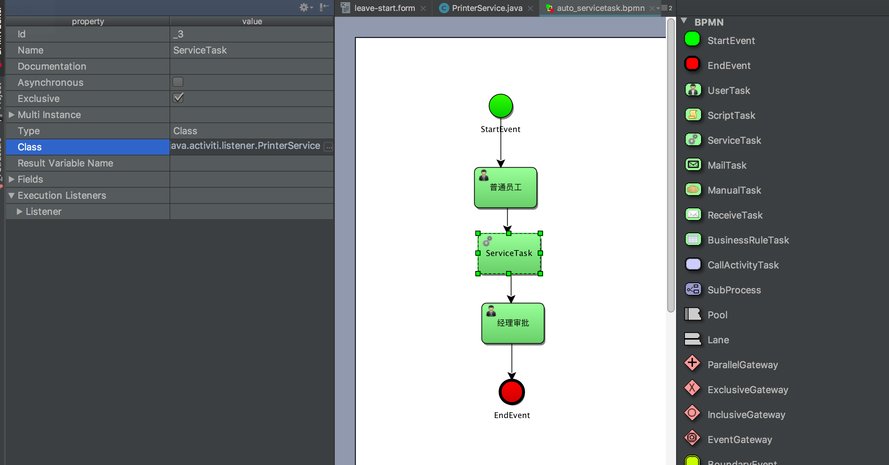
定义自动执行的类
xxxxxxxxxxpackage com.sudojava.activiti.listener;import org.activiti.engine.delegate.DelegateExecution;import org.activiti.engine.delegate.JavaDelegate;import java.util.Map;public class PrinterService implements JavaDelegate { public void execute(DelegateExecution execution) throws Exception { Map<String, Object> var = execution.getVariables(); System.out.println("--hello-:>>" + var.get("name")); }}执行流程
xxxxxxxxxxpackage com.sudojava.activiti.servicetask;import com.sudojava.activiti.initdata.ProjectInitManager;import com.sudojava.activiti.task.ExecutorMyTask;import org.activiti.engine.RepositoryService;import org.activiti.engine.RuntimeService;import org.activiti.engine.TaskService;import org.activiti.engine.repository.Deployment;import org.activiti.engine.runtime.ProcessInstance;import org.activiti.engine.task.Task;import java.io.InputStream;import java.util.HashMap;import java.util.List;import java.util.Map;import java.util.function.Consumer;public class MyServiceTask { private ProjectInitManager manager; public MyServiceTask() { manager = new ProjectInitManager(); } /** * 发布流程 * * @param fileName */ public void deloyProcess(String fileName) { RepositoryService repositoryService = manager.getRepositoryService(); InputStream inputStream = this.getClass().getClassLoader().getResourceAsStream(fileName); Deployment deployment = repositoryService.createDeployment().addInputStream(fileName, inputStream).deploy(); System.out.println("------>>" + deployment.getId()); System.out.println("------>>" + deployment.getName()); } public void startProcessInstance(String processName) { RuntimeService runtimeService = manager.getRuntimeService(); Map<String, Object> var = new HashMap<>(); var.put("name", "jack"); ProcessInstance processInstance = runtimeService.startProcessInstanceByKey(processName, var); System.out.println("---->>" + processInstance.getId()); System.out.println("---->>" + processInstance.getProcessDefinitionName()); System.out.println("---->>" + processInstance.getProcessDefinitionId()); System.out.println("---->>" + processInstance.getBusinessKey()); } public void findPersonalTask() { TaskService taskService = manager.getTaskService(); List<Task> list = taskService.createTaskQuery().taskAssignee("zhangsan") .processDefinitionKey("myProcess_1").list(); list.forEach(new Consumer<Task>() { public void accept(Task task) { System.out.println("------>>"+task.getId()); System.out.println("------>>"+task.getAssignee()); } }); } public void completePersonalTask(String taskID){ manager.getTaskService().complete(taskID); } public static void main(String[] args) { // new MyServiceTask().deloyProcess("auto_servicetask.bpmn"); // new MyServiceTask().startProcessInstance("myProcess_1"); // new MyServiceTask().startProcessInstance("myProcess_1"); // new MyServiceTask().findPersonalTask(); new MyServiceTask().completePersonalTask("2505"); }}11.2、使用Delegate expression来实现java的服务任务
BPMN流程图
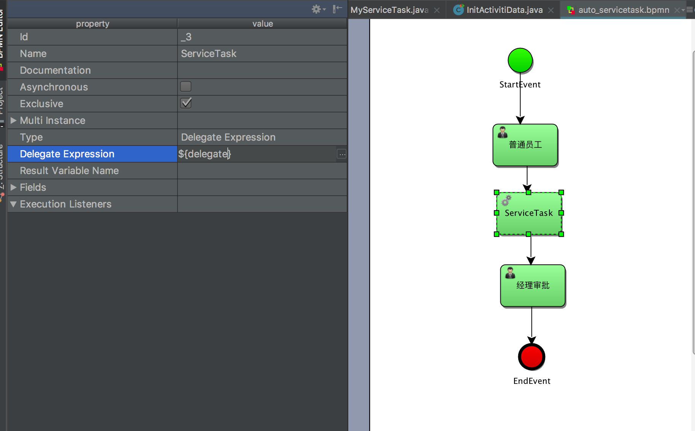
${delegate}表示存放流程中的变量，该变量是一个java对象，来实现对应的服务。
辅助自动执行类
xxxxxxxxxxpackage com.sudojava.activiti.listener;import org.activiti.engine.delegate.DelegateExecution;import org.activiti.engine.delegate.JavaDelegate;import java.io.Serializable;import java.util.Map;public class PrinterService implements Serializable, JavaDelegate { public void execute(DelegateExecution execution) throws Exception { Map<String, Object> var = execution.getVariables(); System.out.println("--hello-:>>" + var.get("name")); }}执行流程
xxxxxxxxxxpackage com.sudojava.activiti.servicetask;import com.sudojava.activiti.initdata.ProjectInitManager;import com.sudojava.activiti.listener.PrinterService;import com.sudojava.activiti.task.ExecutorMyTask;import org.activiti.engine.RepositoryService;import org.activiti.engine.RuntimeService;import org.activiti.engine.TaskService;import org.activiti.engine.repository.Deployment;import org.activiti.engine.runtime.ProcessInstance;import org.activiti.engine.task.Task;import java.io.InputStream;import java.util.HashMap;import java.util.List;import java.util.Map;import java.util.function.Consumer;public class MyServiceTask { private ProjectInitManager manager; public MyServiceTask() { manager = new ProjectInitManager(); } /** * 发布流程 * * @param fileName */ public void deloyProcess(String fileName) { RepositoryService repositoryService = manager.getRepositoryService(); InputStream inputStream = this.getClass().getClassLoader().getResourceAsStream(fileName); Deployment deployment = repositoryService.createDeployment().addInputStream(fileName, inputStream).deploy(); System.out.println("------>>" + deployment.getId()); System.out.println("------>>" + deployment.getName()); } public void startProcessInstance(String processName) { RuntimeService runtimeService = manager.getRuntimeService(); Map<String, Object> var = new HashMap<>(); var.put("name", "jack"); var.put("delegate",new PrinterService()); ProcessInstance processInstance = runtimeService.startProcessInstanceByKey(processName, var); System.out.println("---->>" + processInstance.getId()); System.out.println("---->>" + processInstance.getProcessDefinitionName()); System.out.println("---->>" + processInstance.getProcessDefinitionId()); System.out.println("---->>" + processInstance.getBusinessKey()); } public void findPersonalTask() { TaskService taskService = manager.getTaskService(); List<Task> list = taskService.createTaskQuery().taskAssignee("zhangsan") .processDefinitionKey("myProcess_1").list(); list.forEach(new Consumer<Task>() { public void accept(Task task) { System.out.println("------>>"+task.getId()); System.out.println("------>>"+task.getAssignee()); } }); } public void completePersonalTask(String taskID){ manager.getTaskService().complete(taskID); } public static void main(String[] args) { // new MyServiceTask().deloyProcess("auto_servicetask.bpmn"); // new MyServiceTask().startProcessInstance("myProcess_1"); // new MyServiceTask().startProcessInstance("myProcess_1"); // new MyServiceTask().findPersonalTask(); new MyServiceTask().completePersonalTask("5008"); }}第十二章：MailTask邮件任务
Activiti允许通过一个或者多个收件人发送电子邮件的自动邮件服务任务来增强业务流程，包括CC、BCC、简单的HTML内容等，值得注意的是邮件任务不是BPMN2.0官方任务规范，因此，在Activiti邮件任务作为一个专门的服务任务来实现的。并且该节点是自动执行的。
邮件服务器的配置一
activiti引擎要通过支持SMTP功能的外部邮件服务器发送邮件(gevhfepsbjgwbjfc)。 为了实际发送邮件，引擎穾知道如何访问邮件服务器。 下面的配置可以设置到activiti.cfg.xml配置文件中：
| Property | Required? | Description |
|---|---|---|
| mailServerHost | no | The hostname of your mail server (e.g. mail.mycorp.com). Default is localhost |
| mailServerPort | yes, if not on the default port | The port for SMTP traffic on the mail server. The default is 25 |
| mailServerDefaultFrom | no | The default e-mail address of the sender of e-mails, when none is provided by the user. By default this is activiti@activiti.org |
| mailServerUsername | if applicable for your server | Some mail servers require credentials for sending e-mail. By default not set. |
| mailServerPassword | if applicable for your server | Some mail servers require credentials for sending e-mail. By default not set. |
| mailServerUseSSL | if applicable for your server | Some mail servers require ssl communication. By default set to false. |
| mailServerUseTLS | if applicable for your server | Some mail servers (for instance gmail) require TLS communication. By default set to false. |
邮件服务器配置二
| Property | Required? | Description |
|---|---|---|
| to | yes | The recipients if the e-mail. Multiple recipients are defined in a comma-separated list |
| from | no | The sender e-mail address. If not provided, the default configured from address is used. |
| subject | no | The subject of the e-mail. |
| cc | no | The cc’s of the e-mail. Multiple recipients are defined in a comma-separated list |
| bcc | no | The bcc’s of the e-mail. Multiple recipients are defined in a comma-separated list |
| charset | no | Allows to change the charset of the email, which is necessary for many non-English languages. |
| html | no | A piece of HTML that is the content of the e-mail. |
| text | no | The content of the e-mail, in case one needs to send plain none-rich e-mails. Can be used in combination with html, for e-mail clients that don’t support rich content. The client will then fall back to this text-only alternative. |
| htmlVar | no | The name of a process variable that holds the HTML that is the content of the e-mail. The key difference between this and html is that this content will have expressions replaced before being sent by the mail task. |
| textVar | no | The name of a process variable that holds the plain text content of the e-mail. The key difference between this and html is that this content will have expressions replaced before being sent by the mail task. |
| ignoreException | no | Whether an failure when handling the e-mail throws an ActivitiException. By default this is set to false. |
| exceptionVariableName | no | When email handling does not throw an exception since ignoreException = true a variable with the given name is used to hold a failure message |
配置BPMN流程图
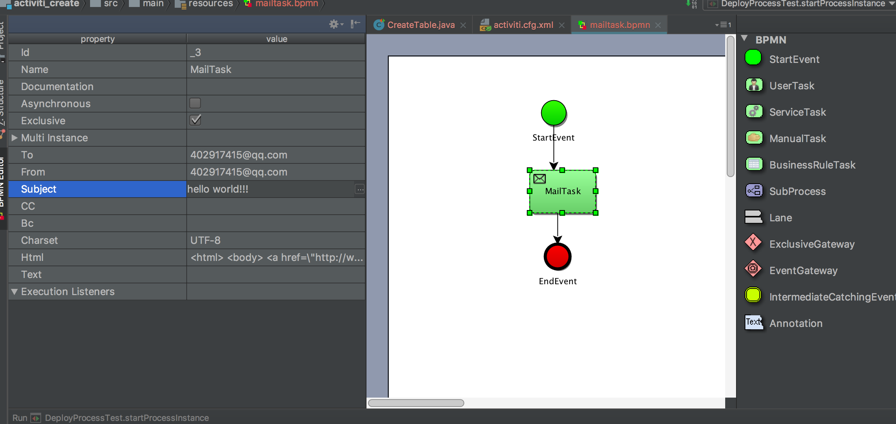
在activiti.cfg.xml文件中需要配置指定的邮件服务器
xxxxxxxxxx <bean id="processEngineConfiguration" class="org.activiti.spring.SpringProcessEngineConfiguration"> <property name="dataSource" ref="dataSource"/> <property name="transactionManager" ref="transactionManager"/> <property name="databaseSchemaUpdate" value="true"/> <!--配置邮件服务器--> <property name="mailServerHost" value="smtp.qq.com"/> <property name="mailServerPort" value="465"/> <property name="mailServerDefaultFrom" value="402917415@qq.com"/> <property name="mailServerUsername" value="402917415@qq.com"/> <property name="mailServerPassword" value="@@@@@@@@@@"/> <property name="mailServerUseSSL" value="true"/> </bean>备注：其中mailServerPassword密码是通过QQ邮箱设置POP3服务，QQ邮箱默认是不开启的，通过手机发送短信到指定的QQ收信地址如图所示：
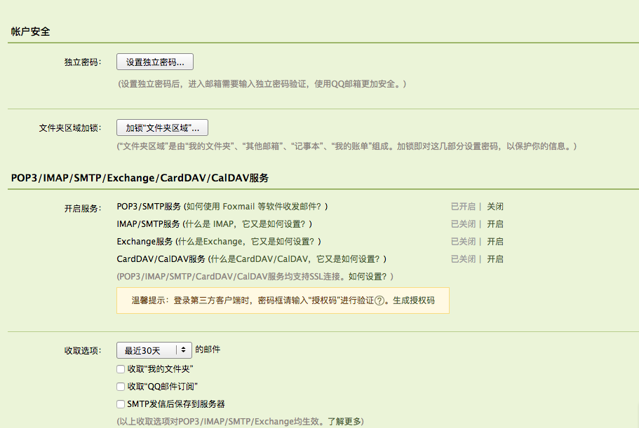
核心代码展示
xxxxxxxxxxprivate ProcessEngine engine = ProcessEngines.getDefaultProcessEngine(); public void deployProcess() { RepositoryService repositoryService = engine.getRepositoryService(); InputStream inputStream = this.getClass().getClassLoader() .getResourceAsStream("mailtask.bpmn"); DeploymentBuilder deployment = repositoryService.createDeployment() .addInputStream("mailtask.bpmn", inputStream); Deployment deployment1 = deployment.deploy(); System.out.println(deployment1.getDeploymentTime()); System.out.println(deployment1.getId()); }启动流程并自动发送邮件
xxxxxxxxxx public void startProcessInstance() { RuntimeService runtimeService = engine.getRuntimeService(); ProcessInstance processInstance = runtimeService.startProcessInstanceByKey("myProcess_1"); System.out.println("----->>"+processInstance.getId()); System.out.println("----->>"+processInstance.getName()); }第十三章：ManualTask人工任务
第十四章：ReceiveTask接收任务
第十五章：指定任务组办理人
candidate-user是给某一个组的成员分配任务，candidate-user参数要求值的格式是多个字符串，中间以逗号分隔开。
当某一个流程传到该task对象时候，Activiti同样会创建一条task记录，但是与assignee不同的是，它并不属于某一个用户的task，而是属于在candidate-user属性中定义的所有参与者共同的任务，因此，在代码中需要执行taskService.createTaskQuery()查找到组的办理任务，只需要指定组中的任意一个成员办理了该任务，Activiti都会直接删除该记录，其他组员再也查不到该task记录了。
具体步骤如下：
- 给任务设置候选人(多个候选人，中间使用逗号分隔开)，这里需要注意的是候选人是无法办理任务的。
- 候选人都可以查询到任务组。
- 候选人拾取(claim)组任务。
- 候选人拾取任务之后，该候选人变成任务的执行人。
- 执行完毕之后，Activiti直接删除该记录，其他组员查询不到该记录了。
BMPN流程图
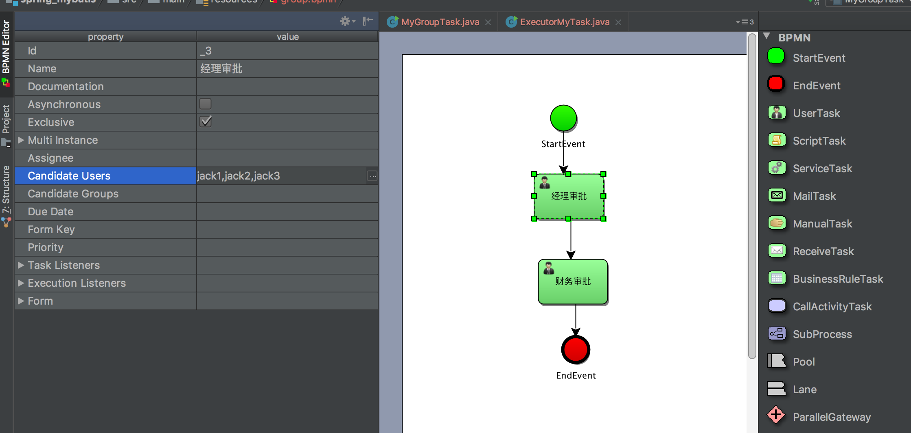
核心代码展示
xxxxxxxxxxpackage com.sudojava.activiti.grouptask;import com.sudojava.activiti.initdata.ProjectInitManager;import com.sudojava.activiti.task.ExecutorMyTask;import org.activiti.engine.RepositoryService;import org.activiti.engine.RuntimeService;import org.activiti.engine.repository.Deployment;import org.activiti.engine.runtime.ProcessInstance;import org.activiti.engine.task.Task;import org.activiti.engine.task.TaskQuery;import java.io.InputStream;import java.util.List;import java.util.function.Consumer;public class MyGroupTask { private ProjectInitManager manager; public MyGroupTask(){ manager = new ProjectInitManager(); } public void deployProcess(String fileName){ RepositoryService repositoryService = manager.getRepositoryService(); InputStream inputStream = this.getClass().getClassLoader().getResourceAsStream(fileName); Deployment deployment = repositoryService.createDeployment() .addInputStream(fileName,inputStream).name("用户组授权") .category("分类").deploy(); System.out.println("--->>" + deployment.getId()); System.out.println("--->>" + deployment.getName()); } /** * * @param processName */ public void startProcessInstance(String processName) { RuntimeService service = manager.getRuntimeService(); ProcessInstance instance = service.startProcessInstanceByKey(processName); System.out.println("---->>" + instance.getId()); System.out.println("---->>" + instance.getProcessDefinitionName()); System.out.println("---->>" + instance.getProcessDefinitionId()); System.out.println("---->>" + instance.getBusinessKey()); } /** * */ public void findPersonalTask() { String userID = "jack2"; TaskQuery taskQuery = manager.getTaskService().createTaskQuery(); taskQuery.taskCandidateUser(userID); taskQuery.processDefinitionKey("myProcess_1"); List<Task> list = taskQuery.list(); list.forEach(new Consumer<Task>() { public void accept(Task task) { System.out.println("----->>"+task.getAssignee()); System.out.println("----->>"+task.getId()); } }); //claim与setAssignee区别在于claim领取之后别人不可以再领取不然会报错而setAssignee则不然 //认领流程 // manager.getTaskService().claim("2504","jack"); //撤销办理 // manager.getTaskService().resolveTask("2504"); } /** * * @param taskID */ public void completeMyPersonalTask(String taskID){ manager.getTaskService().complete(taskID); } public static void main(String[] args) { MyGroupTask groupTask = new MyGroupTask(); // groupTask.deployProcess("group.bpmn"); // groupTask.startProcessInstance("myProcess_1"); groupTask.findPersonalTask(); }}设置用户组办理任务
指定用户组，并添加该用户组下的对应用户
xxxxxxxxxxpackage com.sudojava.activiti.grouptask;import com.sudojava.activiti.initdata.ProjectInitManager;import org.activiti.engine.IdentityService;import org.activiti.engine.identity.User;import org.activiti.engine.impl.persistence.entity.GroupEntity;import org.activiti.engine.impl.persistence.entity.UserEntity;public class CandidateGroupTask { private ProjectInitManager manager; public CandidateGroupTask(){ manager = new ProjectInitManager(); } public void setUserGroup(){ //设置用户组合用户信息 IdentityService identityService = manager.getIdentityService(); GroupEntity commonUser = new GroupEntity(); commonUser.setId("1001"); commonUser.setName("普通用户"); identityService.saveGroup(commonUser); //设置该组对应的员工 UserEntity zhangsan = new UserEntity(); zhangsan.setId("zhangsan"); zhangsan.setFirstName("zhangsan"); identityService.saveUser(zhangsan); identityService.deleteMembership("zhangsan","1001"); identityService.createMembership("zhangsan","1001"); UserEntity lisi = new UserEntity(); lisi.setId("lisi"); lisi.setFirstName("lisi"); identityService.saveUser(lisi); identityService.deleteMembership("lisi","1001"); identityService.createMembership("lisi","1001"); GroupEntity manager = new GroupEntity(); manager.setId("1002"); manager.setName("项目经理"); identityService.saveGroup(manager); //设置该组对应的员工 UserEntity jack = new UserEntity(); jack.setId("jack"); jack.setFirstName("jack"); identityService.saveUser(jack); identityService.deleteMembership("jack","1002"); identityService.createMembership("jack","1002"); UserEntity rose = new UserEntity(); rose.setId("rose"); rose.setFirstName("rose"); identityService.saveUser(rose); identityService.deleteMembership("rose","1002"); identityService.createMembership("rose","1002"); } public static void main(String[] args){ CandidateGroupTask groupTask = new CandidateGroupTask(); groupTask.setUserGroup(); }}BPMN流程图
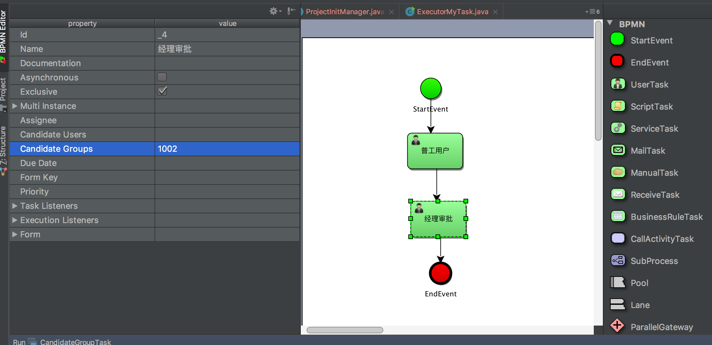
测试代码展示
分别使用不同用户组的人进行查询，结果如下：
xxxxxxxxxxpackage com.sudojava.activiti.grouptask;import com.sudojava.activiti.initdata.ProjectInitManager;import org.activiti.engine.IdentityService;import org.activiti.engine.RepositoryService;import org.activiti.engine.RuntimeService;import org.activiti.engine.identity.User;import org.activiti.engine.impl.persistence.entity.GroupEntity;import org.activiti.engine.impl.persistence.entity.UserEntity;import org.activiti.engine.repository.Deployment;import org.activiti.engine.runtime.ProcessInstance;import org.activiti.engine.task.Task;import org.activiti.engine.task.TaskQuery;import java.io.InputStream;import java.util.HashMap;import java.util.List;import java.util.Map;import java.util.function.Consumer;public class CandidateGroupTask { private ProjectInitManager manager; public CandidateGroupTask(){ manager = new ProjectInitManager(); } public void setUserGroup(){ //设置用户组合用户信息 IdentityService identityService = manager.getIdentityService(); GroupEntity commonUser = new GroupEntity(); commonUser.setId("1001"); commonUser.setName("普通用户"); identityService.saveGroup(commonUser); //设置该组对应的员工 UserEntity zhangsan = new UserEntity(); zhangsan.setId("zhangsan"); zhangsan.setFirstName("zhangsan"); identityService.saveUser(zhangsan); identityService.deleteMembership("zhangsan","1001"); identityService.createMembership("zhangsan","1001"); UserEntity lisi = new UserEntity(); lisi.setId("lisi"); lisi.setFirstName("lisi"); identityService.saveUser(lisi); identityService.deleteMembership("lisi","1001"); identityService.createMembership("lisi","1001"); GroupEntity manager = new GroupEntity(); manager.setId("1002"); manager.setName("项目经理"); identityService.saveGroup(manager); //设置该组对应的员工 UserEntity jack = new UserEntity(); jack.setId("jack"); jack.setFirstName("jack"); identityService.saveUser(jack); identityService.deleteMembership("jack","1002"); identityService.createMembership("jack","1002"); UserEntity rose = new UserEntity(); rose.setId("rose"); rose.setFirstName("rose"); identityService.saveUser(rose); identityService.deleteMembership("rose","1002"); identityService.createMembership("rose","1002"); } /** * 发布流程 * @param fileName */ public void deployProcess(String fileName){ RepositoryService repositoryService = manager.getRepositoryService(); InputStream inputStream = this.getClass().getClassLoader().getResourceAsStream(fileName); Deployment deployment = repositoryService.createDeployment() .addInputStream(fileName,inputStream).name("用户组授权") .category("按照用户组授权").deploy(); System.out.println("--->>" + deployment.getId()); System.out.println("--->>" + deployment.getName()); } /** * 启动流程 * @param processName */ public void startProcessInstance(String processName) { RuntimeService runtimeService = manager.getRuntimeService(); ProcessInstance processInstance = runtimeService.startProcessInstanceByKey(processName); System.out.println("---->>" + processInstance.getId()); System.out.println("---->>" + processInstance.getProcessDefinitionName()); System.out.println("---->>" + processInstance.getProcessDefinitionId()); System.out.println("---->>" + processInstance.getBusinessKey());// ---->>15001// ---->>null// ---->>myProcess_1:2:12504// ---->>null } /** * */ public void findPersonalTask() { String userID = "jack"; TaskQuery taskQuery = manager.getTaskService().createTaskQuery(); taskQuery.taskCandidateUser(userID); taskQuery.processDefinitionKey("myProcess_1"); List<Task> list = taskQuery.list(); list.forEach(new Consumer<Task>() { public void accept(Task task) { System.out.println("----->>"+task.getAssignee()); System.out.println("----->>"+task.getId()); } }); //认领流程 //manager.getTaskService().claim("15004","lisi"); //撤销办理 // manager.getTaskService().resolveTask("2504"); } /** * * @param taskID */ public void completeMyPersonalTask(String taskID){ manager.getTaskService().complete(taskID); } public static void main(String[] args){ CandidateGroupTask groupTask = new CandidateGroupTask(); //groupTask.setUserGroup(); //groupTask.deployProcess("group.bpmn"); //groupTask.startProcessInstance("myProcess_1"); groupTask.findPersonalTask(); // groupTask.completeMyPersonalTask("15004"); }}??动态任务权限的设置 需要重新弄
第十六章：Activiti的网关(GateWay)设置
16.1、排他网关
排他网关，主要是在流程实例中实现决策，当流程执行到这个网关的时候，分支上需要设置condition条件，所有分支都会判断条件是否为true，如果条件为true，则执行该分支， 注意：排他网关只会选择一个为true的分支执行。
如果分支的条件都不满足，没有经过排他网关，Activiti会抛出异常。
排他网关有点像Java中的if … else if… 每一个分支上可以指定一个条件。
BPMN流程图
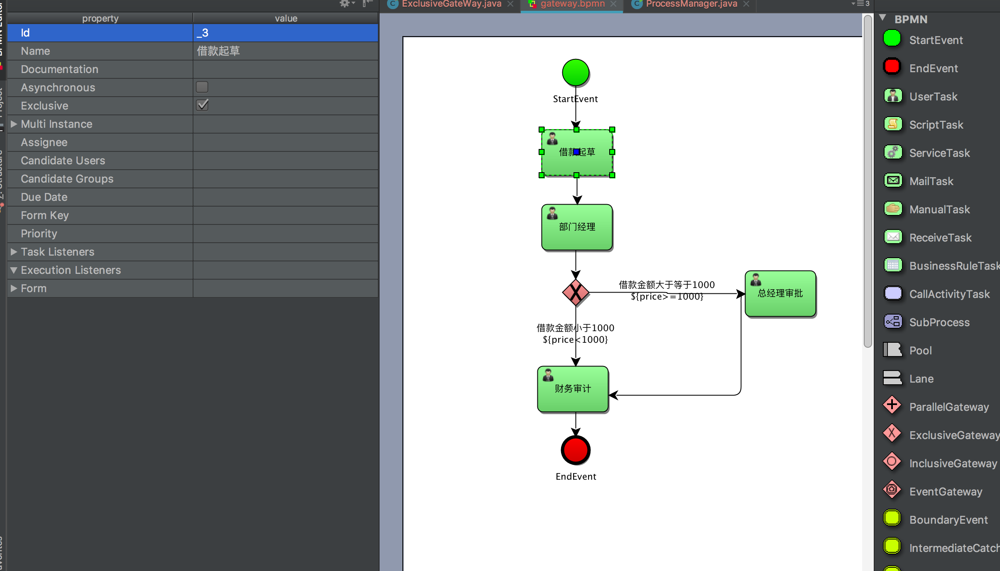
测试代码展示
xxxxxxxxxxpackage com.sudojava.activiti.gateway;import com.sudojava.activiti.initdata.ProjectInitManager;import org.activiti.engine.RepositoryService;import org.activiti.engine.RuntimeService;import org.activiti.engine.repository.Deployment;import org.activiti.engine.runtime.ProcessInstance;import org.activiti.engine.task.Task;import org.junit.Test;import java.io.InputStream;import java.util.HashMap;import java.util.Map;import java.util.function.Consumer;public class ExclusiveGateWay { private ProjectInitManager manager; public ExclusiveGateWay() { manager = new ProjectInitManager(); } /** * 发布流程 */ public void deployProcess() { RepositoryService repositoryService = manager.getRepositoryService(); InputStream inputStream = this.getClass().getClassLoader().getResourceAsStream("gateway.bpmn"); Deployment deployment = repositoryService.createDeployment() .addInputStream("gateway.bpmn", inputStream).name("排他网关") .category("排他网关").deploy(); System.out.println("--->>" + deployment.getId()); System.out.println("--->>" + deployment.getName()); } public void startProcessInstance() { RuntimeService runtimeService = manager.getRuntimeService(); //设置流程变量，指定借款的金额为1001 Map<String, Object> variable = new HashMap<>(); variable.put("price", "1001"); ProcessInstance processInstance = runtimeService.startProcessInstanceByKey("myProcess_1", variable); System.out.println("---->>" + processInstance.getId()); System.out.println("---->>" + processInstance.getProcessDefinitionName()); System.out.println("---->>" + processInstance.getProcessDefinitionId()); System.out.println("---->>" + processInstance.getBusinessKey()); } /** * 查看我的待办事宜 */ public void findPersonalTask() { String userID = "wangwu"; manager.getTaskService().createTaskQuery().taskAssignee(userID).list().forEach(new Consumer<Task>() { public void accept(Task task) { System.out.println("id=" + task.getId()); System.out.println("name=" + task.getName()); System.out.println("assinee=" + task.getAssignee()); System.out.println("createTime=" + task.getCreateTime()); System.out.println("executionId=" + task.getExecutionId()); } }); } /** * 结束我的待办事宜 */ public void completePersonalTask() { String taskID = "20002"; manager.getTaskService().complete(taskID); }}16.2、并行网关
并行网关，包括分支和汇聚两个节点，他允许将流程分成多条分支，也可以把多条分支汇聚到一起，并行网关的功能是基于进入和外出的顺序流：
- 分支(Fock)：并行后所有外出顺序流，为每一个顺序流创建一个并发分支
- 汇聚(Join)：所有到达并行网关，在此等待进入分支，直到所有进入顺序流的分支到达以后，流程就会通过汇聚网关。
注意：如果同一个并行的网关有多个进入和多个外出顺序流，他就同时具有分支和汇聚功能，这个时候，网关会先汇聚所有进入的顺序流，然后在切分成多个并行的分支。
需要强调的是：
并行网关一定是成对出现的，有分支必然有汇聚，一个分支执行完毕后，需要等待其他分支全部执行完流程才会走到下一个节点。
BPMN流程图
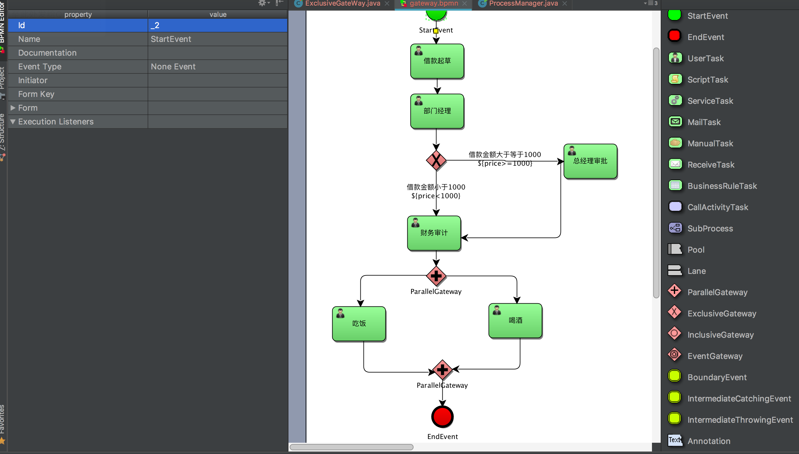
代码展示
xxxxxxxxxxpackage com.sudojava.activiti.gateway;import com.sudojava.activiti.initdata.ProjectInitManager;import org.activiti.engine.RepositoryService;import org.activiti.engine.RuntimeService;import org.activiti.engine.repository.Deployment;import org.activiti.engine.runtime.ProcessInstance;import org.activiti.engine.task.Task;import org.junit.Test;import java.io.InputStream;import java.util.HashMap;import java.util.Map;import java.util.function.Consumer;public class FockAndJoinGate { private ProjectInitManager manager; public FockAndJoinGate(){ manager = new ProjectInitManager(); } public void deployProcess(){ RepositoryService repositoryService = manager.getRepositoryService(); InputStream inputStream = this.getClass().getClassLoader().getResourceAsStream("gateway.bpmn"); Deployment deployment = repositoryService.createDeployment() .addInputStream("gateway.bpmn",inputStream) .name("并行网关") .category("并行网关").deploy(); System.out.println("--->>" + deployment.getId()); System.out.println("--->>" + deployment.getName()); } public void startProcessInstance() { RuntimeService runtimeService = manager.getRuntimeService(); Map<String, Object> variable = new HashMap<>(); variable.put("price", "1001"); ProcessInstance processInstance = runtimeService.startProcessInstanceByKey("myProcess_1", variable); System.out.println("---->>" + processInstance.getId()); System.out.println("---->>" + processInstance.getProcessDefinitionName()); System.out.println("---->>" + processInstance.getProcessDefinitionId()); System.out.println("---->>" + processInstance.getBusinessKey()); } /** * 查看我的待办事宜 */ public void findPersonalTask() { String userID = "shuaige"; manager.getTaskService().createTaskQuery().taskAssignee(userID).list().forEach(new Consumer<Task>() { public void accept(Task task) { System.out.println("id=" + task.getId()); System.out.println("name=" + task.getName()); System.out.println("assinee=" + task.getAssignee()); System.out.println("createTime=" + task.getCreateTime()); System.out.println("executionId=" + task.getExecutionId()); } }); } /** * 结束我的待办事宜 */ public void completePersonalTask() { String taskID = "37508"; manager.getTaskService().complete(taskID); }}16.3、包含网关
包含网关是看做排他网关和并行网关的结合体，和排他网关一样，我们能够在外出顺序流上定义条件，包含网关会解析他们，和排他网关的区别是能够选择多于一条的顺序流，这个和并行网关一样。
包含网关的功能是基于进入和外出顺序流的：
- 分支： 全部外出顺序流的条件都会被解析。结果为true的顺序流会以并行方式继续运行。 会为每一个顺序流创建一个分支。
- 汇聚： 全部并行分支到达包括网关。会进入等待章台， 直到每一个包括流程token的进入顺序流的分支都到达。 这是与并行网关的最大不同。换句话说，包括网关仅仅会等待被选中运行了的进入顺序流。 在汇聚之后，流程会穿过包括网关继续运行。
注意，假设同一个包括节点拥有多个进入和外出顺序流。 它就会同一时候含有分支和汇聚功能。包含网关是判断条件的。
这时，网关会先汇聚全部拥有流程token的进入顺序流。 再依据条件推断结果为true的外出顺序流，为它们生成多条并行分支。
BPMN流程图
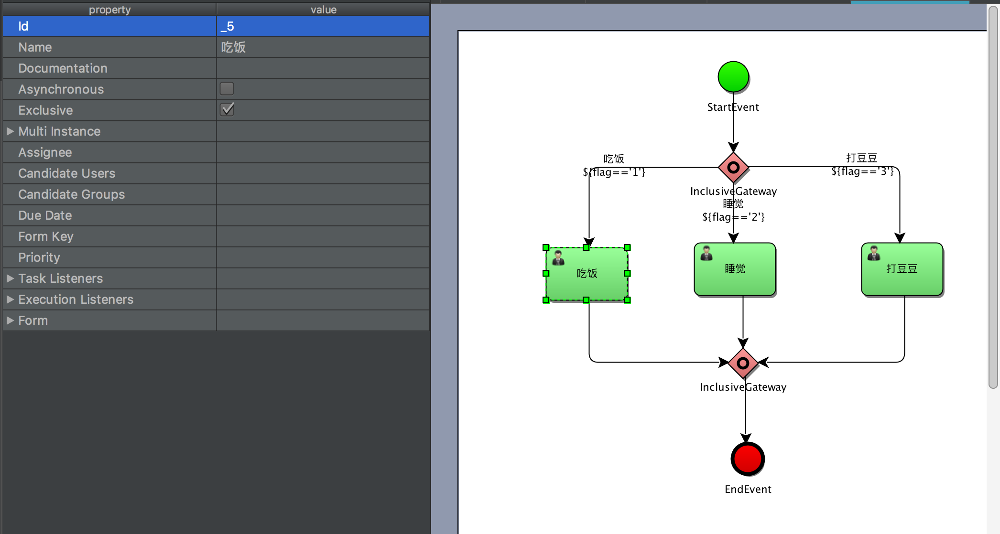
测试代码展示
xxxxxxxxxxpackage com.sudojava.activiti.gateway;import com.sudojava.activiti.initdata.ProjectInitManager;import org.activiti.engine.RepositoryService;import org.activiti.engine.RuntimeService;import org.activiti.engine.repository.Deployment;import org.activiti.engine.runtime.ProcessInstance;import org.activiti.engine.task.Task;import org.junit.Test;import java.io.InputStream;import java.util.HashMap;import java.util.Map;import java.util.function.Consumer;public class InclusiveGateWay { private ProjectInitManager manager; public InclusiveGateWay(){ manager = new ProjectInitManager(); } public void deployProcess(){ RepositoryService repositoryService = manager.getRepositoryService(); InputStream inputStream = this.getClass().getClassLoader().getResourceAsStream("inclusive.bpmn"); Deployment deployment = repositoryService.createDeployment() .addInputStream("inclusive.bpmn",inputStream) .name("包含网关") .category("包含网关").deploy(); System.out.println("--->>" + deployment.getId()); System.out.println("--->>" + deployment.getName()); } public void startProcessInstance() { RuntimeService runtimeService = manager.getRuntimeService(); Map<String, Object> variable = new HashMap<>(); variable.put("flag", "2"); ProcessInstance processInstance = runtimeService.startProcessInstanceByKey("myProcess_1", variable); System.out.println("---->>" + processInstance.getId()); System.out.println("---->>" + processInstance.getProcessDefinitionName()); System.out.println("---->>" + processInstance.getProcessDefinitionId()); System.out.println("---->>" + processInstance.getBusinessKey()); } /** * 查看我的待办事宜 */ public void findPersonalTask() { String userID = "lisi"; manager.getTaskService().createTaskQuery().taskAssignee(userID).processDefinitionKey("myProcess_1").list().forEach(new Consumer<Task>() { public void accept(Task task) { System.out.println("id=" + task.getId()); System.out.println("name=" + task.getName()); System.out.println("assinee=" + task.getAssignee()); System.out.println("createTime=" + task.getCreateTime()); System.out.println("executionId=" + task.getExecutionId()); } }); } /** * 结束我的待办事宜 */ public void completePersonalTask() { String taskID = "10006"; manager.getTaskService().complete(taskID); }}第十七章：Activiti子流程
第十八章：Activiti流程驳回、会签、挂起操作
第十九章：Activiti 集成SpringBoot
Activiti是Apache授权的业务流程管理（BPM）引擎。这样的引擎有一个核心目标，就是将人工任务和服务调用组成一个流程定义，并以一定的顺序执行这些定义，同时公开各种API来启动，管理和查询关于该定义的流程实例的数据。与许多竞争对手相反，Activiti是轻量级的，可以轻松地与任何Java技术或项目集成。所有这一切，以及任何规模的工作 - 从几十到几千甚至几百万的流程执行。
18.1、SpringBoot 集成
Activiti和Spring很好地结合在一起。Spring Boot中的convention-over-configuration方法与Activiti的流程引擎很好地配合使用。我们只需要一个数据库，SpringBoot会自动帮我们配置完成所需的各种service，并且实例化。
SpringBoot是基于“习惯优于配置”的原则，主要是为大量第三方的开源库提供了自动配置的功能，SpringBoot主要是由spring-boot-starters给Activiti提供了配置。
主要是配置如下：
- 自动创建Activiti ProcessEngine的实体bean
- 自动注册所有的Activiti Service 实体bean
- 创建一个Spring Job Executor
- 自动扫描部署在resource下的所有流程文件
导入pom.xml文件
xxxxxxxxxx <project xmlns="http://maven.apache.org/POM/4.0.0" xmlns:xsi="http://www.w3.org/2001/XMLSchema-instance" xsi:schemaLocation="http://maven.apache.org/POM/4.0.0 http://maven.apache.org/xsd/maven-4.0.0.xsd"> <modelVersion>4.0.0</modelVersion> <groupId>com.sudojava.springboot_activiti</groupId> <artifactId>springboot_activiti</artifactId> <version>0.0.1-SNAPSHOT</version> <packaging>jar</packaging> <name>springboot_activiti</name> <description>Demo project for Spring Boot</description> <parent> <groupId>org.springframework.boot</groupId> <artifactId>spring-boot-starter-parent</artifactId> <version>1.5.8.RELEASE</version> <relativePath/> <!-- lookup parent from repository --> </parent> <properties> <project.build.sourceEncoding>UTF-8</project.build.sourceEncoding> <project.reporting.outputEncoding>UTF-8</project.reporting.outputEncoding> <java.version>1.8</java.version> </properties> <dependencies> <dependency> <groupId>org.springframework.boot</groupId> <artifactId>spring-boot-starter-data-jpa</artifactId> </dependency> <dependency> <groupId>org.activiti</groupId> <artifactId>activiti-engine</artifactId> <version>5.21.0</version> </dependency> <dependency> <groupId>org.activiti</groupId> <artifactId>activiti-spring-boot-starter-basic</artifactId> <version>5.21.0</version> </dependency> <dependency> <groupId>org.springframework.boot</groupId> <artifactId>spring-boot-starter-thymeleaf</artifactId> </dependency> <dependency> <groupId>org.springframework.boot</groupId> <artifactId>spring-boot-starter-web</artifactId> </dependency> <dependency> <groupId>org.springframework.boot</groupId> <artifactId>spring-boot-starter-tomcat</artifactId> </dependency> <dependency> <groupId>mysql</groupId> <artifactId>mysql-connector-java</artifactId> <scope>runtime</scope> </dependency> <dependency> <groupId>org.springframework.boot</groupId> <artifactId>spring-boot-starter-test</artifactId> <scope>test</scope> </dependency> </dependencies> <build> <plugins> <plugin> <groupId>org.springframework.boot</groupId> <artifactId>spring-boot-maven-plugin</artifactId> </plugin> </plugins> </build></project>配置application.properties文件
xxxxxxxxxxspring.datasource.driver-class-name=com.mysql.jdbc.Driverspring.datasource.username=rootspring.datasource.password=rootspring.datasource.url=jdbc:mysql://localhost:3306/activiti2?useUnicode=true&characterEncoding=UTF-8#配置Hibernate的基本属性spring.jpa.show-sql=truespring.jpa.hibernate.ddl-auto=updatespring.jpa.properties.hibernate.dialect=org.hibernate.dialect.MySQL5Dialectspring.activiti.check-process-definitions=false#配置Activiti数据源属性,可以配置 drop-create 初始化数据库spring.activiti.database-schema-update=trueBPMN流程文件

定义流程Process接口
xxxxxxxxxxpackage com.sudojava.springboot_activiti.proservice;public interface ProcessService { /** * 发布流程，将流程文件放到classpath目录下 * * @param processFileName */ public void deployProcess(String processFileName); /** * 删除流程操作 * * @param id */ public void deleteProcessByID(String id);}定义流程Process接口实现类
xxxxxxxxxxpackage com.sudojava.springboot_activiti.proservice;import org.activiti.engine.RepositoryService;import org.springframework.beans.factory.annotation.Autowired;import org.springframework.stereotype.Component;public class ProcessServiceImp implements ProcessService { private RepositoryService repositoryService; /** * 发布流程，将流程文件放到classpath目录下 * * @param processFileName */ public void deployProcess(String processFileName) { repositoryService.createDeployment().addClasspathResource(processFileName); } /** * 删除流程操作 * * @param id */ public void deleteProcessByID(String id) { repositoryService.deleteDeployment(id,true); }}定义我的待办事宜接口以及实现类
xxxxxxxxxxpackage com.sudojava.springboot_activiti.proservice;import org.activiti.engine.RepositoryService;import org.springframework.beans.factory.annotation.Autowired;import org.springframework.stereotype.Component;public class ProcessServiceImp implements ProcessService { private RepositoryService repositoryService; /** * 发布流程，将流程文件放到classpath目录下 * * @param processFileName */ public void deployProcess(String processFileName) { repositoryService.createDeployment().addClasspathResource(processFileName); } /** * 删除流程操作 * * @param id */ public void deleteProcessByID(String id) { repositoryService.deleteDeployment(id,true); }} xxxxxxxxxxpackage com.sudojava.springboot_activiti.taskservice;import org.activiti.engine.RuntimeService;import org.activiti.engine.TaskService;import org.activiti.engine.runtime.ProcessInstance;import org.activiti.engine.task.Task;import org.springframework.beans.factory.annotation.Autowired;import org.springframework.stereotype.Component;import java.util.List;import java.util.function.Consumer;public class MyTaskServiceImp implements MyTaskService { private TaskService taskService; private RuntimeService runtimeService; /** * 启动流程实例 * @param processName */ public void startProcessInstance(String processName) { ProcessInstance processInstance = runtimeService.startProcessInstanceByKey(processName); System.out.println("---->>" + processInstance.getId()); System.out.println("---->>" + processInstance.getProcessDefinitionName()); System.out.println("---->>" + processInstance.getProcessDefinitionId()); System.out.println("---->>" + processInstance.getBusinessKey()); } /** * 查找我的待办事宜 * @param processDefinitionKey * @param userID */ public void findPersonalTask(String processDefinitionKey, String userID) { List<Task> list = taskService.createTaskQuery() .taskAssignee(userID).processDefinitionKey(processDefinitionKey).list(); list.forEach(new Consumer<Task>() { public void accept(Task task) { System.out.println("------>>" + task.getId()); System.out.println("------>>" + task.getAssignee()); } }); } /** * 结束个人待办事宜 * @param taskID */ public void completePersonalTask(String taskID) { taskService.complete(taskID); }}SpringBoot 测试结果
xxxxxxxxxxpackage com.sudojava.springboot_activiti;import com.sudojava.springboot_activiti.proservice.ProcessService;import com.sudojava.springboot_activiti.taskservice.MyTaskService;import com.sudojava.springboot_activiti.taskservice.MyTaskServiceImp;import org.activiti.engine.RepositoryService;import org.junit.Test;import org.junit.runner.RunWith;import org.springframework.beans.factory.annotation.Autowired;import org.springframework.boot.test.context.SpringBootTest;import org.springframework.test.context.junit4.SpringJUnit4ClassRunner;(SpringJUnit4ClassRunner.class)public class SpringbootActivitiApplicationTests { private ProcessService processService; private MyTaskService myTaskService; private RepositoryService repositoryService; public void deployProcess() {// Deployment deployment = repositoryService.createDeployment().addClasspathResource("hello.bpmn")// .name("第一个流程")// .category("spring boot 流程")// .deploy(); processService.deployProcess("hello.bpmn");// System.out.println("------>>"+deployment.getId());// System.out.println("------>>"+deployment.getName()); } public void findPersonalTask(){ // myTaskService.startProcessInstance("myProcess_1"); myTaskService.findPersonalTask("myProcess_1","zhangsan"); } public void completePersonalTask(){ myTaskService.completePersonalTask("2504"); }}第二十章：Activiti集成MockMVC单元测试
第二十一章：Activiti REST API数据风格
通用Activiti REST原则
安装与认证
activiti包含了一个activiti引擎的REST API，把activiti-rest.war部署到像Apache Tomcat这样的servlet容器就可以使用。不过，它也可以使用在其他web应用中，把activiti-rest的依赖都加入classpath，添加servlet，并映射到你的应用中。
默认情况下，activiti引擎会连接内存数据库H2。你可以修改WEB-INF/classes目录下的db.properties来修改数据库设置。REST API使用JSON格式（http://www.json.org），它是基于Restlet（http://www.restlet.org）开发的。
前端适合使用easyUI或者VUE.JS来展示
课前默写
1. 使用CXF发布SOAP协议的服务 2. Spring中整合CXF发布服务 3. 使用Spring整合CXF发布REST服务
作业
xxxxxxxxxx1. 使用Activiti工作流完成OA中的请假审批流程面试题
1. 工作流的基本理论 2. Activiti简介及BPMN 3. 使用IDEA搭建Activiti开发环境 4. Activiti的整体结构 5. Process流程定义和部署维护 6. Activiti用户和用户组 7. Activiti流程实例和个人任务管理 8. Activiti集成Spring、MyBatis实现自定义表单 9. 表单的介绍以及FormService的使用 10.ServiceTask自动执行任务 11.MailTask邮件任务 12.ManualTask人工任务 13.ReceiveTask接收任务 14.指定任务组办理人 15.Activiti网关设置 16.Activiti子流程 17.Activiti流程驳回、会签、挂起操作 18.Activiti集成SpringBoot 19.Activiti继承MockMVC单元测试 20.Activiti REST API数据风格的实现